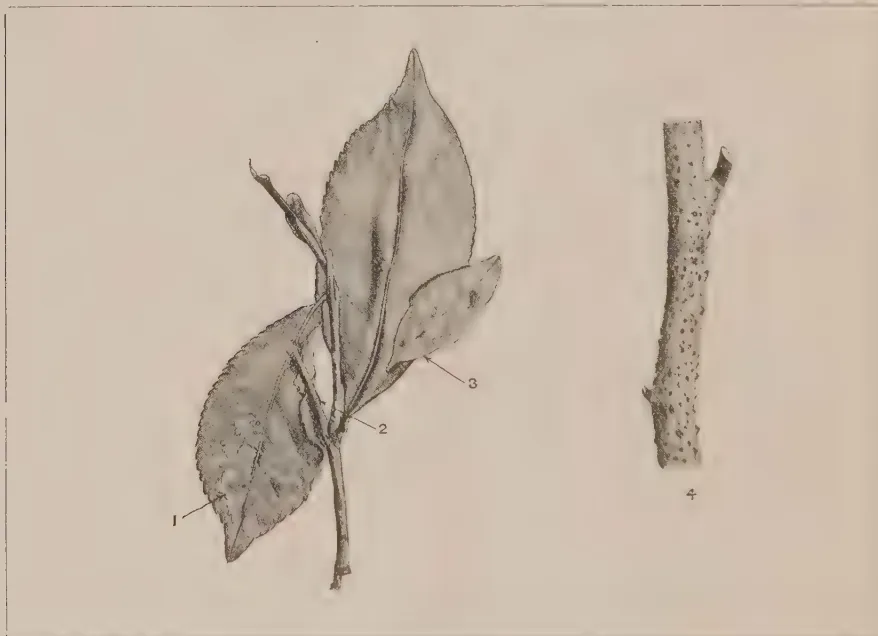
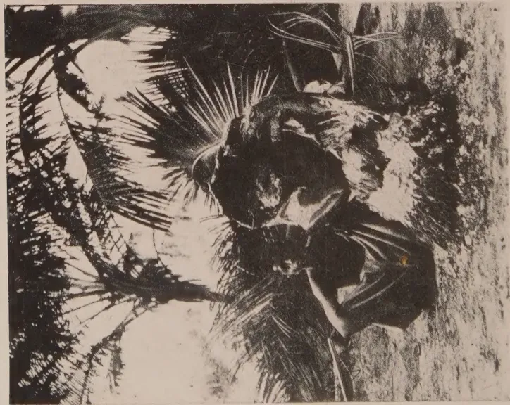
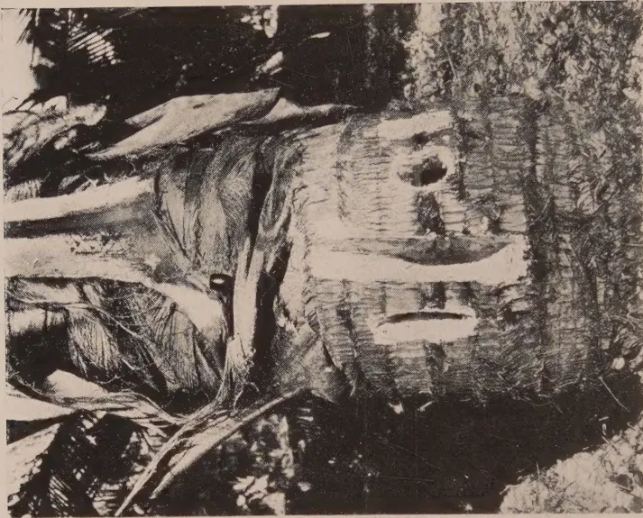

THE
TROPICAL AGRICULTURIST:
JOURNAL OF THE
CEYLON AGRICULTURAL SOCIETY.
VOL. XLVIII. PERADENIYA, MARCH, 1917. No. 3.
THE TEA INDUSTRY.
The tea industry is the chief agricultural industry of the higher lands of the Colony. It is estimated that there are about 400,000 acres under tea, of which the greater portion is under European supervision.
Tea is grown in many districts on worn-out lands and upon hill slopes that have been severely leached by heavy tropical rains. Manuring has had to be resorted to and the experiments which have been conducted at the Peradeniya Experiment Station have clearly demonstrated the value of interplanting tree and shrub forms of leguminous plants to supply nitrogen in an organic form. Mineral salts have in the past been supplied at the time of pruning of tea bushes but since the War there has been a shortage of potash.
Potash locked up in the soil can, in part, be liberated by tillage and applications of lime. Many estates have already adopted this practice, but a question that requires solution is the quantity of lime to be applied. This can only be settled by experiment but agricultural practice in the tropics seems to point to frequent small applications being of greater value than heavy dressings at long intervals.
The problem of preventing wash is an important one and has been dealt with by some estates by means of contour drains. Vertical forking tends to prevent wash but it is possible that a further development of contour draining is worthy of consideration and planting hedges of small leguminous or other herbaceous plants along contour lines worthy of experimental trial.
146[MARCH, 1917.Pests and diseases are now receiving closer attention and several are under careful investigation.
The Shot-hole Borer (Anisandrus fornicatus, Eichh.) has been investigated by a special Entomologist during the past two years and experimental control measures are being carried out. It is, however, most important that all planters should keep this pest under close observation and direct attention to any new factors that may be noticed. It is only by co-operation with all interested in the industry that the best results of the present investigations can be obtained.
The tea tortrix (Homona coffearia, N.) requires attention. Preliminary investigations are being made into the parasitic enemies and fungal diseases of the pest, in the hope that use may be made of them in control measures.
Black Rot Disease of Tea caused by a species of Hypochnus has recently been found in the low-country and to it the attention of planters has been called. In the present issue, a description is given of the disease and recommendations made for remedial measures to be taken.
The Diplodia disease of tea is also causing damage in some localities, and evidence seems to be accumulating that it is most prevalent in fields where prunings have been regularly buried or where stumps of albizzia exist.
The question of quality is a difficult one. Much seems to depend upon close supervision of plucking and upon the position and aspect of the estate and the climatic conditions prevailing. Further investigations into these factors appear to be necessary.
The important question of wood for packing boxes has from time to time been raised, but it would appear to be most desirable to ascertain whether the Colony cannot supply some of its requirements in this respect—if not at present—in the near future.
If the native woods of the Colony are unsuitable, may it not be possible in some localities to undertake forest plantations of introduced trees which will provide suitable material?
MARCH, 1917.]147The Director of Land Records and Agriculture, Assam (Mr. A. R. EDWARDS, I.C.S.), has issued the following report on the Tea Industry of that Province:—The total number of gardens in the Province rose from 765 (revised) to 779. Thirteen new gardens were opened during the year under review. Of these two were in the Karimganj and two in the South Sylhet subdivision of the Sylhet district, four in the Tezpur subdivision of the Darrang district, two in the Golaghat subdivision of the Sibsagar district and three in the Sadr subdivision of the Lakhimpur district. Besides these, one old garden was re-opened in the Kamrup district.
The total area under tea increased from 376,375 acres (revised) to 383,821 acres, the new extensions amounting to 10,014 acres and the area abandoned to 2,568 acres. The total area plucked was 358,891 acres or about 94 per cent. of the area under tea. The proportion is almost the same as that of last year.
The total area of land comprised within tea estates increased from 1,291,130 acres (revised) to 1,323,619 acres, of which about 29 per cent. is actually under tea.
The permanent and temporary labour forces increased by 7,972 and 3,384 persons, respectively.
The weather was generally very favourable for the growth of tea. In Cachar, however, it was unfavourable throughout the season except during the months of October and November. In that district the rainfall was exceptionally heavy and temperatures were low. In June there were high floods and in July the water rose till the flood was the highest ever known in the district. Large areas of tea were submerged and a considerable area damaged. In Sylhet the rainfall from May to August was unusually heavy. There were high floods all over the district and the tea bushes in some gardens in the Karimganj subdivision were damaged. But on the whole the season was highly favourable and a good fall of rain late in October brought on fresh flushes so that plucking went on later than usual. In Lakhimpur also the rainfall was exceptionally heavy up to the end of September, but light for the remaining three months. The season is reported to have been a remarkably good one for yield. In Darrang the rainfall was sufficient and evenly distributed and the season was exceptionally good, more especially towards the end. In Kamrup and Coalpara the character of the season was fair, while in Sibsagar and Nowgong it was favourable.
148[MARCH, 1917.A statement comparing the rainfall of the year with that of the previous year and with the average of the preceding five years is given below :—
| Station. | 1914. | Average of previous 5 years. | 1915. |
|---|---|---|---|
| Silchar ... .. | 108.91 | 133.52 | 169.23 |
| Sylhet ... .. | 131.90 | 164.04 | 184.02 |
| Dhubri ... .. | 82.15 | 100.93 | 96.15 |
| Gauhati ... .. | 68.22 | 66.66 | 79.24 |
| Tezpur ... .. | 71.31 | 78.96 | 67.50 |
| Nowgong ... .. | 101.33 | 79.47 | 127.90 |
| Jorhat ... .. | 74.05 | 89.97 | 96.71 |
| Dibrugarh ... .. | 88.44 | 112.45 | 127.31 |
This year's crop amounted to 245,385,920 lb. of manufactured tea against 208,227,104 lb. of the preceding year, which means an increase of about 18 per cent. Favourable weather was generally experienced in the latter part of the season which finished very late. No green tea is reported to have been manufactured this year. The demand for this kind of tea and its production have been decreasing from year to year.
Except in the districts of Sibsagar and Darrang the demand for tea seed does not appear to have been great. Prices vary according to quality. According to the trade statistics 10,611 maunds of tea seed were exported from Assam, principally to Calcutta.
The Secretary to the Indian Tea Association, Calcutta, has kindly furnished statistics relating to prices realized both in Calcutta and in London for teas produced in this Province. The figures are given in the subjoined statement :—
| Tea produced during twelve months ending 31st March. | Brahmaputra Valley. | Surma Valley. | ||
|---|---|---|---|---|
| Number of Packages. | Prices per lb. | Number of Packages. | Prices per lb. | |
| 1 | 2 | 3 | 4 | 5 |
| London sales finishing about 31st March, 1916 .. | 1,106,515 | 11.23d. | 338,323 | 10.06d. |
| London sales finishing about 31st March, 1915 ... | 918,321 | 10.26d. | 325,977 | 9.21d. |
| Calcutta sales finishing about 31st March, 1916 ... | 285,771 | As. p. 9.05 |
259,941 | As. p. 8.01 |
| Calcutta sales finishing about 31st March, 1915 ... | 192,013 | 7.10 | 202,698 | 6.11 |
It will be observed that prices ruled considerably higher than in the previous year.
MARCH, 1917.]149The Scientific Department of the Indian Tea Association continued the publication of their quarterly journal. In addition three pamphlets called "Tea Roots" written by MR. A. C. TUNSTALL, B.Sc., "Note on the Spraying of Tea" by MESSRS. E. A. ANDREWS, B.A., and A. C. TUNSTALL, B.Sc., and "Suggestions for the Manurial Treatment of Tea Soils" by G. D. HOPE, B.Sc., PH.D., F.C.S., and DR. P. H. CARPENTER, F.I.C., F.C.S., were published during the year. A sum of Rs. 12,000 was contributed to the Association by the Assam Administration during the year 1915-16.
The opening of new gardens, the increase in area and outturn and the high prices now ruling are clear indications of the prosperity of the tea industry. The figures for export during the last five years are interesting. There was some falling off in 1912-13 and again in 1913-14 from the high figures shown in 1911-12; in 1914-15 the exports were little below those of 1911-12, while in 1915-16 they rose considerably above those of that year. It is satisfactory to observe that this industry has not been adversely affected by the war. In certain districts, notably in Sylhet, Lakhimpur and Darrang, Indian capital is being more freely employed than has been the case in the past.—INDIAN TRADE JOURNAL, Vol. xlii., No. 545, Sept. 8, 1916.
BY A. C. TUNSTALL, B. Sc.
During the present season many specimens of unhealthy seedlings have been received by this department. They came from all districts and there is reason to suppose that the year has been a very bad one for nurseries. In a few cases the ill-health could be definitely ascribed to a specific disease, but most of the specimens showed no indications of the attack of any vegetable or animal parasites, and the reason for their ill-health must be sought elsewhere.
These cases will be considered first. The majority of the specimens showed signs of injury at the collar and many had bent and twisted roots as well. A microscopic examination of the tissues of the collars revealed no fungus mycelium nor anything which would lead to the supposition that insects had caused the injury. The cortex and the growing layers had been destroyed. Sometimes the roots were damaged, sometimes the stems, and in many cases the injury was broad enough to include portions of both stems and roots. The position on the plants appeared to be determined by the depth of planting, the injury taking place just at the surface of the soil. There was nothing to prevent the upward flow of the solution derived from the soil, but the tissues, in which the organic food stuff, elaborated in the leaves from this solution and the carbonic acid gas from the air, are transported, were completely destroyed. The roots were therefore cut off from their supplies, for the solution derived from the soil is useless for the nourishment of the plant until it has been elaborated.
In order to remedy the damage the plants had produced swellings above the injured place and, in cases of slight damage, this may have succeeded in bridging the gap. If it had not done so new roots were in some cases produced at the swellings and the old roots died away. Even supposing the seedlings recovered they must of necessity have been severely checked, and will rarely produce satisfactory plants.
150[MARCH, 1917.It would be best under the circumstances to discard all seedlings injured in this way, without any attempt at curing them. Prevention, therefore, is the only reasonable method of treatment of this disease. The injury is not due to any organic disease but appears to be physical.
A study has been made of the physical conditions under which this disease occurs. In most of the tea districts the weather early this year was abnormal, periods of exceptionally bright hot sunny weather alternated with those of heavy rain. The disease did not usually occur on shaded nurseries but was generally found only on those exposed to the sun. It would seem therefore that the sun had something to do with it. Moreover the disease was common only on sandy soils. No seedlings growing on clay soils were observed to be suffering from this disease. Sandy soils get much hotter under the sun's rays than those containing much clay and it would seem probable that the injury was due merely to the burning of the collars of the seedlings by the sun's rays. The long periods of wet weather which preceded the hot spells would weaken the seedlings and thus render them more liable to injury of this nature.
To prevent a recurrence of the disease, attention should be paid to the following points :
The seed beds should be very carefully drained and shaded and the shading should not be removed until after the hot dry weather which usually occurs in May. If for any reason it is considered advisable to remove the shading before this time a mulch of dried grass should be placed round each seedling. This mulch should be stirred up after rain so that it does not rot and thus form a harbouring place for diseases, which may prove more injurious than the damage to avoid which its use is recommended. It is frequently possible to prevent the death of slightly diseased seedlings by the application of a little cattle or other mildly stimulating manure, but as mentioned above the resulting plants are never likely to develop into very satisfactory bushes.
Another point which deserves discussion is the large percentage of bent seedlings which are found in many nurseries. It is unnecessary to point out to a practical planter that a bent seedling is not likely to produce as good a bush as a straight one. It is well to prevent the bending of the seedlings if it be possible to do so economically.
Some time ago the scientists engaged in the investigation of tea in Java paid some attention to this question and the results of their observations were published in a bulletin.*
The seed of the tea plant is provided with a hard shell which splits on germination. The two cotyledons—the seed lobes, in which are stored the products on which the young plant feeds—open out so as not to hinder the development of the root and shoot. The shell splits along the line between the cotyledons commencing at the eye and following the seed lobes so that the seed separates almost symmetrically. The rootlet, which develops first, is near the eye, and arranged in such a manner that it grows straight out through the eye. As the root grows directly downwards it would be logical to suppose that the most suitable position of the seed at the time of germination would be with the eye downwards.
* Meded. van het Proefstation voor Thee. No. XLIII.—1 Over de Keiming van de Theezaden. DR. CH. BERNARD.
MARCH, 1917.]151This supposition was borne out by the Java experiments. Seed was planted in three ways :—
With the eye above or on one side the springing apart of the seed lobes takes place irregularly, and the rootlet, which is induced to grow downwards by geotropic stimulus, is sometimes hindered by the seed lobe or the shell, and may be bent on itself two or three times before it commences to grow straight down. Sometimes the root grows between the shell and the seed lobe, and grows round and round until it finds an opening. It is readily understood that the percentages of bent roots is high under these circumstances.
With the eye below the root commences to grow downwards at once and the cotyledons spring apart satisfactorily giving full play to the developing shoot, and the percentage of bent seedlings is negligible in this case.
It may be argued that, under the conditions which obtain on the average tea estate, it is impossible to ensure the planting of the seeds with the eye downwards. It was however found that it could be done as a practical measure in Java, and there is no reason, theoretical or practical, to suppose that it cannot be done in North-East India. The common practice at present is to germinate the seed in pits before planting it into nursery beds. This method is not very satisfactory from the point of view of bending, as the seed lies in all directions in the pit, and unless it be planted out just as soon as the rootlet appears outside the shell the bending will take place. As the seeds do not all germinate at the same time some of the roots will be bent before the bulk of the seed is ready for planting out.
Fortunately there are few diseases which seriously affect young tea plants which are due to vegetable parasites. The most common are Red Rust and Die-back. These diseases are to be found on all nurseries after periods of bad weather. Red Rust is too well known to need description, but die-back, though just as prevalent, often escapes notice. The leaves become spotted with large brown patches and the ends of the branches die back, just as with Red Rust, but an examination of the dead portion shows no signs of Red Rust, fructifications. It is however covered with black dots. These mark the fructifications of a species of Gleosporium. . . .
The remedy lies in cutting away the diseased shoots to clean healthy wood and spraying with a fungicidal mixture. It would be quite a good thing to spray all nurseries twice, once in March and again in May, with a fungicide. Lime sulphur solution is suggested as very suitable. This would not cost very much and would save the plants from a good deal of damage. A species of Rosellinia kills a considerable number of plants in nurseries. It attacks the roots, and the seedlings die in patches. It is easily checked by watering the soil round the dead and dying seedlings with lime water and removing the dead ones.
Summary of suggestions:—
The investigation into Shot-hole Borer Beetle of Tea (Anisandrus fornicatus Eichh) was started in March, 1915. The following extracts are taken from a preliminary report issued in November last by MR. E. R. SPEYER, Entomologist in charge of Shot-hole Borer work in Ceylon:—
1. Life History.—The female beetle alone constructs a branched gallery, the entrance hole of which constitutes the exit hole for the offspring when the latter have attained maturity. The normal stages of insect-metamorphosis are passed through by the insect in reaching maturity.
The time expended in the various stages is as follows, at an altitude of 4,000 ft. above sea level:—
| Days. | |
|---|---|
| (a) Entrance of Female to laying of first batch of eggs ... | 25 |
| (b) Egg Stage ... .. | 4 |
| (c) Larval Stages ... .. | 25 |
| (d) Pupal Stage to emergence of Adult ... .. | 6 |
| Total .. | 60 |
The female which makes the gallery does not leave it during the development of the broods, and usually dies in the gallery after emergence of the broods. If sufficient food remains, the female may live for at least 21 days in the gallery which the offspring have vacated.
Maximum number of young individuals found in one gallery, 34.
Average number of young individuals found in one gallery, 15.
The proportion of male to female is as 1 to 5.
2. Seasonal History.—The development is less rapid in the wet season than in the dry. It is estimated that four to six generations take place in the course of one year. No definite resting period of aestivation or hibernation can be traced.
3. Elevation.—The insect is found from sea-level (Southern Province) to 4,800 ft. above sea-level (Uva) in tea, and at 5,000 ft. in castor-oil tree. The development is slower at high elevations than at low.
4. Parts of the Tea-plant Attacked.—The leaves and seed are not attacked. The true roots are not attacked. Seedlings less than one year old are seldom attacked. The collar or trunk of the bush is sometimes but not often attacked below the ground-level to a depth of 2 inches. All other parts of the plant, except branches less than inch in diameter, are liable to infestation. Seed-bearers are seldom attacked in the trunk, and only one case has been found of attack after death of the tea-bush.
5. Food.—The female beetle, while constructing the gallery, deposits the spores of a fungus on the gallery walls. The fungus hyphae give off spores which afford food for the larvæ. As far as can be ascertained, the sap of the tea-plant affords no source of nutrition to any stage of the insect. The adult beetle, while boring, ejects the borings without eating any part of the wood tissues; the larvæ and young adult beetles neither excavate nor feed on any of the tissues of the plant.
MARCH, 1917.]1536. Damage to Plant.—Direct: (a) In thinner branches the presence of a horizontal circular gallery between pith and cambium causes these to break easily, especially in windy seasons. (b) While constructing the gallery, the salivary juice of the female beetle causes a disturbance in the tissues, leading to a staining of the wood and an abnormal deposition of carbonate, probably of calcium, in the tissues. Rotting of the wood follows, causing much damage to frames, and causing much die-back in branches left below the level of pruning.
Indirect: (c) After, and occasionally before, the vacation of the gallery by the broods, a multiplication of the cambium cells takes place in the region of the entrance hole, and also at the extremities of horizontal circular arms of the gallery lying in the cambium region. This gives rise to a cylinder of wood which finally fills the gallery completely. The length of a normal gallery is about 2 inches, with a constant diameter of about 1/20 inch. The volume of wood replaced in each gallery is therefore about cubic inch. The formation of wood should normally go to the production of leaf.
It has been impossible to gauge the exact loss of crop due to Shot-hole Borer, but it is estimated at 100 to 200 lb. per acre on fields giving a low yield, the loss being roughly in inverse proportion to the leaf crop on high-yielding fields. For example, a field giving 300 lb. per acre should yield 400 to 500 lb., and one giving 1,000 lb. per acre should give slightly more than 1,000 lb.
7. Shade.—Shot-hole Borer is especially abundant under shade of rubber: this, however, is probably due to a drain on the soil properties. Under grevillea and other common shade trees there is no evidence that the extent of attack is any less than on fields exposed to the direct sun. Shade is, therefore, no check upon the ravages of the Borer.
8. Natural Enemies.—Two insects have been found to be predatory on Shot-hole Borer larvæ. One is a species of thrips and the other a trogositid beetle. Neither are found commonly enough to have an appreciable effect in checking the increase of Shot-hole.
During the wet season an overgrowth of the fungus upon which the insect feeds is liable to take place in the gallery, which leads to the blocking of the galleries and the appearance of a bacterium which, apparently, causes disintegration of the fungus. Many broods are often destroyed by this condition, especially in well cultivated tea. Often the larvæ of one of the fruit-flies are found in the gallery: this fly is commensal with the larvæ, and is not directly injurious to the larvæ of Shot-hole.
1. Effects of Pruning.—It has been demonstrated by experiment that, subsequent to pruning and the appearance of the first new shoots, a physiological condition is produced in the tea-plant which renders those plants highly immune to attack for periods after pruning varying with the health of the plant. The more frequently tea is pruned in infested districts the heavier becomes the attack. This cannot be solely due to climatic condition or elevation, and must be occasioned partly by an obliteration of the essential physiological conditions caused by frequent pruning. The return
154[MARCH, 1917.of the beetle to fields where the pruning immunity is prevalent is from two sources: (1) from adjoining fields which have naturally out-run their immunity, and (2) from a small proportion of bushes where the beetle is able to live through periods closely following pruning. The latter bushes are often characterized by 'die-back' of some of the branches after pruning, and it is in these die-backs or in late-shooting branches that the beetle mostly survives. In any given field the attack is at its minimum from two to four months after pruning, the attack increasing slowly in well-cultivated and long-running fields for a period of from six to eighteen months. After this the increase is more rapid, until the time of pruning.
2. Treatment of Prunings.—(a) Burying Prunings.—Shot-hole Borer Beetle is able not only to live but to breed in buried prunings for a period of two months after burying, and almost certainly longer. Therefore, at least two generations can result after pruning, if the prunings are buried. Records show that the beetles can actually emerge through earth 9 inches deep, and it is reported that they have been seen to emerge from greater depths. Observations on prunings buried to a depth of 1 foot 6 inches, and covered with mounds of earth, provided negative evidence to the effect that the beetles had emerged from that depth.
As it is possible to return a large proportion of organic matter to the soil by burying the leaves and small twigs, and destroying the woody parts, the burying of complete prunings is strongly to be deprecated. The application of lime, basic slag, and sulphate of potash to prunings at time of burial does not affect the Borer. The insect has been killed in prunings buried with sodium bisulphite and potassium cyanide, but this is both costly and dangerous to handle.
(b) Prunings left on the ground—Any insects in the young adult, or sometimes pupal, stages at the time of pruning can emerge from the prunings. In wet weather, beetles have been found in the prunings for a period of twenty days. In dry weather the beetles and larvæ begin to die after the second day from pruning, if the prunings are exposed to the sun. The insect seldom enters a pruned stem on the ground, and cannot produce offspring in such an event. To be effective, the woody parts of prunings must therefore be destroyed within two days of pruning.
(c) Burning Prunings.—This practice is not found to have an appreciable effect in controlling the beetle. In addition, valuable organic matter is lost by wholesale burning, which involves portions of the prunings which are not liable to attack and are therefore unnecessarily destroyed. By burning, all the organic matter is lost. The potash, lime, and phosphoric acid contents are saved if the ash is returned to the soil.
It is considered, unquestionably, that the leaves and small twigs should be slashed from prunings immediately after each bush is pruned, and the woody parts removed at once and destroyed by fire. The practice has been carried out over large areas at a cost of Rs. 4 per acre, including the burning. Slashing the leaves from unpruned bushes before pruning cannot always be recommended, as much leaf material is lost by the practice. Twigs of greater thickness than an ordinary pencil should not be slashed from the prunings, but should be destroyed with the thicker wood. When disturbed by pruning, it is the habit of the insects to push their way as far as possible into their galleries. They will therefore not escape at the time of pruning.
MARCH, 1917.]1553. Cultivation and Soil Composition.—There is no longer any doubt that high cultivation has played a great part in checking the increase of Shot-hole Borer. Soil samples taken from uninfested estates show a general tendency to higher nitrogen content and better humus than those taken from infested estates. Samples taken from areas of fields with low and high infestation, respectively, show higher nitrogen content and lime content in the former, though much variation is apparent. Much green manure, together with dressings of lime is, therefore, strongly recommended.
4. Green Manure and Wind-Belt Trees.—Shot-hole Borer attacks dadap, albizzia, tephrosia, crotalaria and grevillea.
(a) Dadap.—Old dadaps suffer severely, therefore they should not be allowed to attain a large size. When ringing dadap the ringed surface attracts the female beetle. It is advisable from ten to forty days after ringing to scorch the ringed surface by means of a blow-flame. Dadap cuttings should not be removed from one estate to another, as they often contain the Borer.
(b) Albizzia.—The branches are often infested high up on large trees. These are usually in a bad state of health and show signs of other diseases. Unhealthy trees should be removed immediately.
(c) Tephrosia and (d) Crotalaria.—Tephrosia candida is often heavily infested. When using as a mulch, the green portions should be cut off, and the woody parts removed and burnt. This also applies to crotalaria. Both should be cut low within two to four months after each pruning suggested in the scheme.
(e) Grevillea.—Healthy trees exude a gum on entry of the beetle, which causes death to the insect. Branches broken by the wind are often successfully attacked, and should be removed when possible. It should so be arranged that all green manure trees be used as a mulch at a time two to four months after any pruning in a given field.
5. Other Trees.—An Ordinance has been passed for the eradication of castor-oil trees in the tea growing area of Ceylon. They should be burnt immediately or as soon as possible after cutting down. Many other shrubs and plants are attacked in heavily infested districts, but the beetle very seldom rears broods in them.
6. Jungle Belts.—It has been recommended that jungle belts of not less than 30 feet in width be planted between adjoining estates, where the tea of one estate is adjacent to the tea of another. The trees suitable for the purpose are: (1) Acacia decurrens, for high elevations; (2) red gum, blue gum, and toona for medium elevations; (3) rubber and coconuts for low elevations. The under-growth should consist of jungle shrubs, mana-grass, etc. A patana belt mile wide has been found to have kept one field isolated from another for several years in respect of Shot-hole Borer.
Belts of castor-oil trees cannot be planted as traps, as they mature at different times. The insects established in an early maturing tree would, on emergence, find no other suitable tree surrounding, and would fly back to the tea.
E. R. SPEYER. 156[MARCH, 1917.(Dept. of Agriculture, Ceylon.—Leaflet No. 2.)
A new disease of tea has recently appeared in two districts in the low country. In its effect on the bush, as far as it is evident to the planter, it may be regarded as a leaf disease, but the fungus which causes it is not confined to the leaves, and attempts to eradicate it by gathering and burning diseased leaves, can only result in failure.

HYPOCHNUS ON TEA.
1. Leaf Spot, 2. Leaf Margin attached to stem, 3. Fallen leaf attached to older leaf, 4. Effect on young woody stem.
Attention is usually drawn to the affected bushes by the blackening of the young leaves. The more tender leaves at the tops of the shoots turn black, soft and rotten. This resembles, to some extent, an attack of Grey Blight or Brown Blight on the flush, though the diseased leaves are usually softer than in the case of these two diseases and do not show the distortions which so often accompany them when they attack young leaf. It differs, however, from Grey and Brown Blight in the following particulars.
(1) Many of the affected leaves, although completely black and rotten, do not fall off, but remain hanging to the twigs. If such leaves are carefully removed from the branch it will be found that the leaf stalk is fastened to the branch by a very thin film of threads, or mycelium.
(2) If a diseased leaf comes in contact with another leaf, healthy or diseased, or with the stem, it becomes united to it by a web of fungus threads.
The chief characteristics of the disease are (1) the persistence of hanging dead leaves, and (2) the occurrence of dead leaves united in clusters of two or three, or united to the stem by mycelium.
The fungus which causes the disease consists of very fine threads which run along the stems and over the undersurface of the leaves, giving off
MARCH, 1917.]157branches which penetrate into the living tissues of the tea bush and kill them. It has been found on woody stems up to an inch in diameter, and can no doubt occur on any part of the bush above the ground. On the old stems it does not appear to cause any damage. Younger woody stems, about one-third of an inch in diameter, may show a number of small corky warts, but these may apparently result from other causes also, and are not an infallible sign of this disease. On the green stems, the fungus causes a premature hardening in the form of scaly grey-brown patches. It is not until it reaches the leaf that any serious damage can be noted.
The first sign of an attack on the young leaf is the appearance of a number of small blackish-brown or chocolate-brown spots, usually crowded together. The upper surface of the leaf appears sunken on and round the spots. These spots soon run into one another and form a patch which gradually extends over the whole leaf. Large patches are red-brown to chocolate—brown, usually mottled, becoming black when old and wet.
On older leaves, the effect may not be so general, only part of the leaf being attacked, but this no doubt depends on the weather. If the whole leaf is not involved, the diseased spots are usually large, sunken, black, or deep chocolate-brown with a blackish margin, uniformly coloured or mottled, on the upper surface, and greyish-brown, somewhat sodden on the lower. When dry, the spot is grey, and may easily be mistaken for Grey Blight.
The fungus threads run along the stem and pass to the leaves via the leaf stalk. As far as has been determined, they are confined to the under-surface of the leaf, except in cases where a diseased leaf falls on the upper side of a sound one. But even in the latter case the fungus does not appear to penetrate into the sound leaf through the upper surface. The spots may first appear at any point on the leaf, not necessarily at the stalk end as might be expected. Frequently, the fungus accumulates in the axil of the leaf (i.e., the angle between the leaf and the stem) and forms a fairly dense, white or yellowish felted cushion, while the leaf and stem are still green.
In addition to the attack on the leaf via the leaf stalk, healthy leaves may be infected by coming in contact with diseased leaves, or from diseased leaves which fall off and adhere to those below. As far as has been observed, the fungus does not produce aerial mycelium, i.e., free threads which stretch across from one leaf to another, as in the case of Horse-hair Blight.
Except when it forms cushions in the axils of the leaves, the fungus, though to a great extent external, is invisible to the naked eye and can scarcely be detected with a hand lens.
The easiest way of detecting the fungus of "Black Rot" is to remove a diseased leaf, preferably one which is completely black and rotten, very carefully from the branch. A thin film of mycelium will then be found running from the leaf to the stem, and this can sometimes be peeled off the stem for a short distance. If a shoot which bears one or two diseased leaves be placed in a closed tin box, it will be found, in about twelve hours, to have produced a quantity of greyish cobwebby mycelium. The growth of the fungus under such circumstances is extraordinarily rapid, and glass dishes in which diseased shoots are enclosed are usually filled with masses of mycelium in a few days. This indicates the possibility of a very rapid spread of the disease under suitable weather conditions, e.g., a saturated atmosphere and a high temperature.
158[MARCH, 1917.The disease usually occurs in patches, scattered over the field. This would indicate an original distribution by spores, blown to different parts of the field, and a subsequent spread at each point by the growth of the mycelium and the dispersal of diseased leaves. There is every reason to believe that the fungus is an inhabitant of the Ceylon jungle and spreads from the jungle to the tea. On one infected estate, it has been found on an isolated group of jungle shrubs, on Gurukina (Calophyllum Burmanni) of which the clump was chiefly composed, and on Iramusu (Hemidesmus indicus), a climber which overrun the Gurukina. There would not appear, however, to be much probability that it will prove to be confined to any particular shrub.
The spores of the fungus have not yet been observed. The fructification occurs on the under side of the tea leaf in the form of a thin, white, powdery patch. Up to the present, it has only been found in those older leaves which show little or no damage; it has not been seen on the completely blackened young leaf. The fructification shows that the fungus is a Hypochnus, and we have adopted the name "Black Rot" for the disease because the same name is applied to a disease of coffee in Southern India which is caused by a species of Hypochnus. The Ceylon fungus, however, differs in several respects from the South Indian one, and is possibly a different species.
Infection experiments on tea at Peradeniya have hitherto failed completely, though material was used on which the fungus was growing vigorously, and the attempts were made during the rains of the South-west Monsoon. It must not however be assumed that the fungus will not attack tea at Peradeniya or higher elevations: indeed, the history of plant pathology in Ceylon appears to indicate that species of Hypochnus will be found to be wide spread parasites, though this one has not been reported on tea before.
The tea Hypochnus is still alive on prunings left in the field, two months, at least, after pruning. Prunings gathered in June from a field pruned in April yielded an abundance of mycelium when placed in closed glass dishes, which rapidly produced the characteristic spots on fresh tea leaves put in subsequently. In the same field, and at the same date, the lower branches of some bushes, whose new leaves had come into contact with the prunings on the ground, had already acquired the disease from the prunings.
As the fungus lives on the stems and branches, diseased bushes must be pruned well back, and as it continues to live on the prunings if left on the ground, these must be removed and burnt. This procedure will get rid of the greater part of the fungus, but as it may still exist on the older stems, the pruned bushes must be well sprayed with Bordeaux mixture.
The following mixture has been recommended in recent years, in view of the quality of Ceylon lime in the place of standard Bordeaux Mixture.
Dissolve 6 lb. ounces of copper sulphate in two or three gallons of water in a wooden vessel. Slake some good quicklime with a little water and put it into a tub with 120 gallons of soft water. The quantity of lime should be, in Ceylon, about 5 lb. Stir up the lime and water two or three times and leave it to settle. Run off 86 gallons of the clear lime water, and mix it with the copper sulphate solution, and then make it up to 100 gallons by adding 11 or 12 gallons of soft water.
T. PETCH,
MARCH, 1917.]159The Tea Tortrix was first described in 1861 by NEITNER in a pamphlet entitled "Enemies of the Coffee Tree," under the name of Tortrix coffearia. He states that "It is found nearly all the year round, not exclusively upon coffee but also upon a variety of garden plants. . . . . It is not at all common." Besides Ceylon, it is also found in North-East India, where it is considered to be of comparatively little importance as a pest of tea, although widely distributed; a closely-allied, if not identical, species occurs in the Nilgiris, South India, but there it is considered as quite a minor pest.
It was first recorded as a serious pest of Tea in Ceylon in 1889, when a somewhat extensive outbreak took place in Dimbula and Dikoya, and GREEN described and roughly figured the insect and its work in his little book "Insect Pests of the Tea Plant," 1890. After this it appears to have attracted but slight attention until ten years later, when another serious outbreak took place in Dikoya, Dimbula, Pundaluoya and Ambegamuwa. In 1900, GREEN in the circular "Some Caterpillar Pests of the Tea Plant" gives an account of the life-history exclusive of the egg-stage which had not been observed at that time. This outbreak appears to have grown steadily worse until 1903 when it reached its climax. The Maskeliya District suffered most severely and ever since that time the pest seems to have found that district peculiarly favourable to its development. The egg-masses of the insect were found by GREEN in July, 1902, and the following year in the circular "The Tea Tortrix," its life-history is described. In this circular, GREEN recommended the collection of egg-masses as the most effective means of control, and suggested the use of lamp-traps and spraying with Arsenical poisons immediately after plucking, as subsidiary methods.
The outbreak which commenced in 1900 lasted without much diminution until 1906 and involved, at various periods, the districts of Maskeliya, Bogawantalawa, Dikoya, Talawakelle, Kotmale, Pussellawa, Ambegamuwa and Nawalapitiya. In 1905 an outbreak occurred on an estate at Yatiyantota, but it appears to have been short-lived. During the next four years there was apparently not much trouble from the pest, but it broke out again in 1911 and 1912 in Lindula, Dikoya, Hatton, Ambegamuwa and Dolosbage. Since then there have been comparatively few reports of it until 1914 when another big visitation commenced in Maskeliya and in Lindula. In December, 1914, a small outbreak took place on an estate at Ulapane. In 1915, the pest was reported from Dolosbage, and last year slight outbreaks were reported from Dehiowita, Demodera and Ratnapura.
In his circular "The Tea Tortrix" GREEN says:—"It is probable that the actual distribution of the insect will be found to coincide with the distribution of the tea-plant in the Island, but as a pest it has been recorded only from the following localities: Dikoya, Bogawantalawa, Maskeliya, Dimbula, Pundaluoya, Ambegamuwa and Yatiyantota. To this list must now be added Demodera, Dolosbage, Nawalapitiya, Dehiowita and Ratnapura. It is probable that there are very few estates with the possible exception of those in
160[MARCH, 1917.the Nuwara Eliya and Uda Pussellawa Districts where a few Tortrix caterpillars could not be found at any time if sought for. At the Peradeniya Experiment Station it is usually possible to find a few of the characteristic twisted flush-heads which betray the presence of the pest in the tea-fields.
The egg-stage of the Tortrix occupies, at Peradeniya, about six days. The larval stage extends from 25 to 65 days, the actual length of time probably depending on such factors as elevation, season and amount of food. The pupal stage lasts usually for eight or nine days, while the adult moth probably lives only until its reproductive function has been exercised.
On hatching from the egg, the young larva, which measures approximately 1.5 m.m. in length, does not immediately make for the flush and commence rolling it after the manner of the older caterpillars, but it usually wanders actively about for some time and finally settles down, generally on the underside of a mature leaf, spins a silken covered way at the sides of the mid-rib or over the slight concavity at the edge and feeds on the epidermis of the leaf. As soon as it has grown to a length of about 5 m.m. it migrates to the flush and thenceforth inhabits the "spun-up" heads. While very young the caterpillar is extremely active and the least disturbance causes it to let itself down on a long silken thread.
The moths are sluggish. If disturbed, they merely fly for a few yards in a rapid and jerky manner and then settle again. At night, they occasionally fly to light in some numbers. In districts which are afflicted with the pest it is often noticeable that a small river or a narrow belt of jungle will have a very marked effect in preventing its spread. The usual method of combating Tortrix is the collection of egg-masses.
The system of lamp-trapping has not proved to be satisfactory.
On an estate in Maskeliya, it was found that dead Grevillea branches with foliage exercised a strong attraction for the female moths if hung up from sticks just above the level of the tea. This led to the use of such branches as traps. Coolies went round to them with hessian bags which were slipped up over the branches. The bags were then sharply jarred to dislodge the moths into them. In this way hundreds of the moths were destroyed—as many as 200 having been taken on one branch, but there is apparently no record as to whether this method has proved effective. Male moths were not found to frequent the branches.
The Tortrix caterpillar is subject to the attacks of a bacterial disease which, under favourable conditions, often kills them out to a very considerable extent. It is also parasitised by several species of Ichneumonidæ and Chalcidæ.
Recently a minute Hymenopterous parasite has been bred from Tortrix egg-masses from the Maskeliya District. Experiments to determine whether this egg-parasite is to be found in any numbers or can be successfully bred in captivity for distribution are now being carried out.
G. M. HENRY.
MARCH, 1917.]161Extracts from the minutes of the proceedings of an Extraordinary General Meeting of the Darjeeling Planters' Association held at the Club Premises, Darjeeling, on Saturday, the 29th July 1916, at 12 o'clock, the President, the HON'BLE MR. H. R. IRWIN, in the chair.
MR. E. A. ANDREWS, Entomologist to the Indian Tea Association, delivered an address on Thrips, in which he described the results of the investigations on this insect carried out in the Darjeeling district during May last. The lecturer commenced by giving a brief account of the general characters of Thrips insects, and discussed the chief differences between the various families of Thrips. He then pointed out that the so-called "Common" and "Black" Thrips of tea are not in the same family, and might therefore be expected to show slight differences in behaviour which would necessitate a different treatment for each. This had been found to be the case in some respects. The chief differences lay in the behaviour of the insect at the pupal stage, and the number of generations in the year. In the case of the Common Thrips the larva descended into the soil to pupate, while the available evidence went to show that there are at most two generations in the year. In the case of the Black Thrips, the pupa was to be found in the mosses and lichens on the stems of the bushes, while the available evidence led one to believe that there are at least two generations in the year, probably more. The egg, the manner of the oviposition, and the larval, pre-pupal, pupal, and adult stages of the Common Thrips were described. The egg of the Black Thrips could not yet be described, but the larval, pupal and adult stages are now known, and brief descriptions of them were given. The Black Thrips found in roses in Darjeeling is not the same as the Black Thrips of tea, as some formerly supposed, but is a different species, belonging to the same family as the Common Thrips.
The lecturer then proceeded to discuss the question of control. The eggs are laid in the leaf tissue of the pekoe leaves and buds, and any eggs in a mature shoot at the time of plucking are thus removed by the pluckers. The operation of plucking therefore had a small effect in reducing the numbers of the insects. This fact, however, was not in itself a justification for hard plucking directly the Thrips appeared. During the opening stages of an attack the insects are in process of emerging from the soil. Plucking off affected shoots might remove the insects then on the bush, but would not affect those still in the soil, and would, in addition, cause a greater proportion of buds to be attacked, and attack on the buds was more serious than on the well-developed shoots. During the later stages of the attack, however, when all of the last year's brood had emerged from the soil, plucking of all affected shoots might be carried out with advantage.
China bushes suffer more severely, as a rule, than indigenous bushes, and strongly flushing tea suffers less than weak tea giving slow growth. In the plains, where bushes flush more vigorously, Thrips does very little harm, although found to occur there occasionally. Another method of dealing with the pest would therefore seem to be the use of suitable forcing manures, so far as this could be done without affecting quality adversely, combined with the use of soil correctives where necessary.
162[MARCH, 1917.Cultivation was another garden operation which should receive attention in dealing with Thrips. It had been found that the Common Thrips descended to the soil to pupate, and that it required fairly firm soil in which to do so. In places where cultivation was poor it was found only four or five inches below the surface, but where trenching had been carried out it was found at a depth of one foot. The larva became a pre-pupa in twenty-four hours, and had turned into a pupa in a further twenty-four hours, thus changing from an active to a passive organism in two days. Any operation, such as trenching and deep forking round the bushes, which loosened the soil for some distance down, diminished the insect's chances of reaching a suitable environment before he became sufficiently inactive to make no further progress. . . .
Experiments with insecticides has shown that these substances could be used with success against Thrips. Crude Oil Emulsion, Lime-Sulphur Solution, "Cook's Nicotine Spray," "Katakilla," and "Insecticide - XEX Green," had all been used with benefit, the most effective being the last-named, which besides giving an increase of 78% in the weight of leaf obtained, had produced a marked reduction in the percentage of shoots attacked, as, whilst on the untreated plots 50% of the shoots were attacked, only 5% of the shoots obtained from the plot treated with this substance showed any sign of damage.
In the case of the Black Thrips, the pupa was found to occur in the mosses and lichens on the stems of the bushes. Steps should therefore be taken to remove these, and for this purpose the application of soda-ash, in the cold weather, which had already given good results in the Darjeeling district, was recommended.—QUARTERLY JOURNAL OF THE SCIENTIFIC DEPT. OF THE INDIAN TEA ASSOCIATION, Part III., 1916.
Ceylon Tea depends very largely upon direct cultivation in the shape of the application of artificial manure, with the supply of which the War has not most fortunately seriously interfered if we except that of Potash Salts of which Germany has a practical monopoly, and although selection has, it is true, been somewhat narrowed and prices have been greatly increased, the majority of estates has been able to carry out their full programmes.
To remedy the lack of Potash Salts recourse has been made to such agents as Lime, Nitrate of Soda, etc., on account of their action upon the Potash reserves in the soil, and so far as an opinion can be at present offered the lack of the direct application of Potash has not yet been severely felt.
Consequent to the fall in the Tea Market—and it was hardly to be expected that the abnormally high level of 1915 would be maintained—the sample of leaf underwent an improvement, but even so complaints of "Reds" did not entirely subside, and it is a moot point whether it is possible entirely to eliminate these from many "Marks" without an unjustifiable reduction in output and without sacrificing certain qualities in the liquors.
The usual protests—and these are now a firmly established hardy annual—were voiced with regard to the supposed deterioration in the manufacture of Ceylon Teas, and it would be as well to place on record the opinion that manufacture receives far closer supervision, that factories are much better equipped now than in former years, and that as long as rough Teas fetch within a cent or two of fine and result in a greater profit per acre, the proprietors of estates are not likely to encourage any departure from the present procedure.—63RD ANNUAL REPT. PLANTERS' ASSOCH. OF CEYLON, 1916.
MARCH, 1917.]163With reference to the paper on Ceylon Tea-box Woods by MR. F. LEWIS, F.L.S., which has been reprinted in the T.A. for October 1916 (p. 211 et seq), the following note on wood for Tea Chests may prove of interest to readers of this Journal:—
The greater bulk of the wood used for Tea chests in Ceylon is imported, and it is worthy of careful consideration whether more wood cannot be produced locally for this purpose. The greater part of the wood used is "Momi,"* and is imported from Japan. The following measurements of girths of various conifers at Hakgala Gardens are of interest:—
| Name | Date of planting | Girth in 1904 | Girth in 1917 |
|---|---|---|---|
| Araucaria Bidwillii ... | — | 7 ft. 3 in. | 9 ft. 6 in. |
| Cryptomeria japonica .. | about 1875 | 7 ft. 5 in. | 8 ft. 3 in. |
| Cupressus Knightiana ... | — | 8 ft. 9 in. | 13 ft. 2 in. |
| Cupressus macrocarpa ... | 1886 | 3 ft. 4 in. | 8 ft. 2 in. |
The following details of a Cryptomeria japonica tree felled in Kandapola some time ago also give valuable information as to the quantity of boarding that could be obtained from well grown trees:—
The dimensions of the tree were:—
Circumference at 33 ft. was 19 inches.
| 30 | " | " | 22 | " |
| 25 | " | " | 27 | " |
| 20 | " | " | 33 | " |
| 15 | " | " | 39 | |
| 10 | " | " | 46 | " |
| 5 | " | " | 50 | " |
| at base | " | " | 65 | " |
and these figures show a cubic capacity of roughly 20 c. ft. It was sawn into half-inch boards and the result was 384 sq. ft. which is exactly 16 cu. ft., but something should be added to this as the sawing was not very accurately done and some of the boards were nearer an inch than half inch thick.
Some 60 trees were measured at random and the circumference 3 ft. from the ground was said to be 62 inches average, but this is possibly an exaggeration and one might count on say 400 sq. ft. of inch boards from an average tree if well sawn.
A full chest takes 16 sq. ft. of in. boards and a half chest 12 sq. ft., so that out of 400 sq. ft. you would get roughly 25 full or 33 half chests.
For a crop of say 200,000 lb. of Tea about 1,100 full and 1,600 half chests are required.
* Momi is Abies firma, but it is possible that in Ceylon this name is given to all tea-box wood, irrespective of its botanical source.
164[MARCH, 1917.A well-known Stock Exchange firm, which has made a name in the rubber share market, has issued a most instructive circular, from which we have made the following extracts :—
In that eminently useful work, RUBBER SHARES AS INVESTMENTS, compiled by MR. HENRY T. BRICE, figures are given showing the fair average yield in lb. per acre for rubber at various ages. We append the figures in question :—
| Years old | ... | 4 | 5 | 6 | 7 | 8 | 9 | 10 |
| Lb. | ... | 100 | 130 | 170 | 225 | 300 | 350 | 400 |
Here we have established what may be termed a progression of production. Let us test its accuracy by the results of the expired year 1915. The following table will enable us to do this. The figures of acreage planted are taken from MESSRS. RICKINSON'S "THE WORLD'S RUBBER POSITION" :—
| Year planted. | Acres planted. | Age of trees. | Assumed Yield per acre. | Yield in tons. |
|---|---|---|---|---|
| 1905 ... | 75,000 | 10 | 400 | 13,400 |
| 1906 ... | 105,000 | 9 | 350 | 16,400 |
| 1907 ... | 220,000 | 8 | 300 | 29,400 |
| 1908 .. | 145,000 | 7 | 225 | 14,500 |
| 1909 ... | 92,000 | 6 | 170 | 7,000 |
| 1910 ... | 149,000 | 5 | 130 | 8,600 |
| 1911 ... | 214,000 | 4 | 100 | 9,500 |
| 1,000,000 | 98,800 |
An average of 221 lb. an acre, all over.
The actual result for 1915 is given by different authorities as from 94,000 tons up to 108,000 tons, a mean of 101,000 tons. The figures of Mr. BRICE are therefore borne out remarkably. Those figures are not continued beyond ten years, but assuming progressive increases of 50 lb. an acre for each year of growth, we append the results of a similar calculation for the year 1920 :—
| Year planted.. | Acres. | Age in Years. | Assumed yield per acre, lb. | Total yield in tons. |
|---|---|---|---|---|
| 1905 ... | 75,000 | 15 | 650 | 21,000 |
| 1906 ... | 105,000 | 14 | 600 | 28,000 |
| 1907 ... | 220,000 | 13 | 550 | 54,000 |
| 1908 ... | 145,000 | 12 | 500 | 32,000 |
| 1909 ... | 92,000 | 11 | 450 | 18,000 |
| 1910 ... | 149,000 | 10 | 400 | 26,000 |
| 1911 ... | 214,000 | 9 | 350 | 33,000 |
| 1912 ... | 125,000 | 8 | 300 | 17,000 |
| 1913 ... | 99,000 | 7 | 225 | 10,000 |
| 1914 ... | 104,000 | 6 | 170 | 8,000 |
| 1915 .. | 50,000 | 5 | 130 | 3,000 |
| 1916 ... | 100,000 | 4 | 100 | 4,000 |
| 1,478,000 | 254,000 |
An average of 385 lb. an acre, all over.
Production on the few existing old estates does not favour the view of an all round output greatly exceeding 400 lb.
A more "rough and ready" way of estimating the crop for the year is to take the January output and multiply it by twelve. The figures for the past few years on this basis are as follows:—
ESTIMATE OF ANNUAL OUTPUT FROM JANUARY OUTPUT.
| Output. | Tons. | Results according to various authorities. | ||||
|---|---|---|---|---|---|---|
| Lowest. | Highest. | |||||
| January | 1913 | .. | 3,774 | 45,288 | 47,618 | |
| " | 1914 | ... | 5,591 | 67,092 | 64,500 | 71,380 |
| " | 1915 | ... | 8,538 | 102,456 | 93,400 | 107,867 |
| " | 1916 | ... | 12,405 | 148,860 | *140,000 | *150,000 |
Of course three or four years is not a very long period upon which to erect a formula but the results as shown above can hardly be a mere coincidence.
WORLD'S PRODUCTION.
| Year. | Plant. | Brazil. | Rest. | Total. | Increase or Decrease. | Visible supplies. Dec. 31. |
Inc. on previous years. | |
|---|---|---|---|---|---|---|---|---|
| In Tons. | In percentage. | |||||||
| 1907 | 1,000 | 38,000 | 30,000 | 69,000 | + 2,800 | + 4·2 | 4,300 | — |
| 1908 | 1,800 | 39,000 | 24,600 | 65,400 | — 3,600 | — 5·2 | 4,800 | 500 |
| 1909 | 3,600 | 42,000 | 24,000 | 69,600 | + 4,200 | + 6·4 | 5,400 | 600 |
| 1910 | 8,200 | 40,800 | 21,500 | 70,500 | + 900 | + 1·2 | 9,500 | 4,100 |
| 1911 | 14,400 | 37,000 | 23,000 | 75,100 | + 4,600 | + 6·5 | 13,000 | 3,500 |
| 1912 | 28,500 | 42,400 | 28,000 | 99,000 | + 23,900 | + 31·5 | 14,000 | 1,000 |
| 1913 | 47,600 | 39,400 | 21,500 | 108,500 | + 9,500 | + 9·6 | 16,000 | 2,000 |
| 1914 | 71,400 | 37,000 | 12,000 | 120,400 | + 11,900 | + 11·0 | 23,000 | 7,000 |
The period of maximum annual increase appears to be already behind us. We have already seen that supply from Brazil and the rest of the world for several years to come is likely to rule at a stationary figure of not over 60,000 tons; the only remaining source of increase, therefore, is from the plantations. Now, the output from these is limited by the acreage under cultivation, and as land planted up in 1916 cannot produce rubber before 1920, all we have to do in order to forecast supplies until the latter date is to estimate correctly the production from the acreage known to be planted up to and including 1916.
The critical years for the plantation industry are apparently 1915 and 1916, for it is those years that must witness the largest aggregate increase in production on previous years. These increases are the result of the colossal planting programmes of 1910, 1911 and 1912, during which years about 490,000 acres were planted out. The years 1917-19 have to absorb the production of only 250,000 acres of new plantings, so the curve of production should flatten considerably during those three years, and the increase in tonnage per annum be much less than for 1915 and 1916.
The future price of rubber obviously turns on the questions:—
* Estimated.
166[MARCH, 1917]If demand keep pace with supply, price should remain constant. At present the rate of increase of the world's supply appears to be slackening. This will be seen from our next table, which gives the figures for plantation rubber from the foundation of the industry.
| Year, | Total acreage planted out. | Increase. | Output in Tons. | Increase in Output. | ||
|---|---|---|---|---|---|---|
| In per-centage. | In Acreage. | In per-centage. | In Tons. | |||
| 1905 | 75,000 | 145 | ||||
| 1906 | 180,000 | 40 | 105,000 | 510 | 251 | 365 |
| 1907 | 400,000 | 110 | 220,000 | 1,000 | 96 | 490 |
| 1908 | 545,000 | 36 | 145,000 | 1,800 | 80 | 800 |
| 1909 | 637,000 | 16 | 92,000 | 3,600 | 100 | 1,800 |
| 1910 | 786,000 | 22 | 149,000 | 8,200 | 127 | 4,600 |
| 1911 | 1,000,000 | 27 | 214,000 | 14,400 | 74 | 6,200 |
| 1912 | 1,125,000 | 12½ | 125,000 | 28,500 | 102 | 14,100 |
| 1913 | 1,224,000 | 8½ | 99,000 | 47,600 | 67 | 19,100 |
| 1914 | 1,328,000 | 8 | 104,000 | 71,400 | 50 | 23,800 |
| 1915 | 1,378,000 | 3¾ | 50,000 | 107,900 | 50 | 36,500 |
The noteworthy feature in this table is that the large actual increase, as expressed in tonnage, is accomplished by a steady decline, as expressed in percentage. From 1912 onwards this is specially marked. Thus the increase of 14,000 tons in that year represented an increase of 102 per cent. on the previous year's crop, whereas the 35,000 tons increase of 1915 represents an increase of only 49 per cent. A continuation of this movement would, in a very few years, bring the annual increased percentage of crop to be absorbed to a very moderate figure.
Let us now try to ascertain the rate at which demand is growing.
For this purpose we will go back to the year 1911, when a stock of 9,500 tons was brought forward from 1910. The following table shows the course of events for the past few years:—
| Year | World's Crop in Tons | Brought forward | Stock in Tons Carried forward | Increase. |
|---|---|---|---|---|
| 1911 | 75,000 | 9,500 | 13,000 | 3,500 |
| 1912 | 99,000 | 13,000 | 14,000 | 1,000 |
| 1913 | 108,000 | 14,000 | 16,000 | 2,000 |
| 1914 | 120,000 | — | — | — |
The year 1911 finished with a stock of 13,000 tons. Stocks were therefore increased by 3,500 tons. The total production for 1910 was 70,500 and for 1911 it was 75,000. Therefore, 4,500 more tons of rubber were produced, of which at the end of 1911 there were unabsorbed 3,500 tons.
MARCH, 1917.]167For 1912, a stock of 13,000 tons was brought forward, and 14,000 tons remained to carry to 1913. Stocks thus rose by 1,000 tons, but production had meanwhile risen from 75,000 tons to 99,000 or 24,000 tons, all of which except 1,000 tons was absorbed.
For 1913, the figures are:—Stocks brought in, 14,000 tons; carried forward, 16,000; increase, 2,000. Production, increase, 9,000. Therefore 7,000 tons were absorbed in 1913 on top of the previous year's increase in production of 23,000 tons.
The year 1914 witnessed an increase in production of 12,000 tons, yet stocks increased by only 7,000 tons, and 1915 showed an increase in production on 1914 of 37,800 tons, yet the year finished with stocks so far as can be computed showing no advance, or possibly a decline.
| Year. | Plantation | Wild Rubber | Total. | |
|---|---|---|---|---|
| Brazil. | Rest of World. | |||
| 1916 | ... 145,000 | 37,000 | 15,000 | 197,000 |
| 1917 | ... 175,000 | +0,000 | 20,000 | 235,000 |
| 1918 | ... 205,000 | 265,000 | ||
| 1919 | .. 230,000 | 295,000 | ||
| 1920 | ... 254,000 | 314,000 | ||
We think it will be conceded that the figures just given are on a maximum scale, especially those for Brazil and the rest of the world. For the former about 37,000 tons, and for the latter about 13,000, or say, 50,000 tons for the two will probably be nearer the mark.
Let us conclude by trying to forecast both production and consumption for the ensuing five years. All our researches indicate that demand is likely to keep pace with supply, the chances of its overtaking supply being in the ascendant. The increase in consumption for the three years 1914—16 will apparently average in the neighbourhood of 30,000 tons per annum. Assuming demand to progress at this rate during the coming four years, the world's requirements will be as set forth in the next table:—
| World's Production. | World's Requirements | |
|---|---|---|
| 1916 | ... 197,000 | 200,000 |
| 1917 | ... 235,000 | 230,000 |
| 1918 | ... 265,000 | 260,000 |
| 1919 | ... 295,000 | 290,000 |
| 1920 | ... 314,000 | 312,000 |
For the present year, 1916, consumption has kept pace with production, and looks like continuing to do so, there being no unduly large accumulation of stocks in any direction. The world's weekly consumption of rubber is about 4,000 tons. At the end of September, London stocks stood at a record figure for the year of 9,163 tons, but it must be remembered that no stocks are now carried at Antwerp, Havre, and Hamburg, as was the case before War.
The above estimate of the world's requirements takes no note of the additional demand of Germany and Austria when peace comes. The annual requirements of these countries before the war was 20,000 tons, and it was growing at the rate of about 10 per cent. per annum.—INDIA RUBBER JOURNAL, Dec. 23rd, 1916.
168[MARCH, 1917.MR. J. M. A. WYNAENDTS VAN RESANDT writes us a long and interesting letter, based on the report of the annual meeting of a well-known Java rubber company, which appeared in our issue of the 12th of August. After dealing with the relative positions of the Java and Malayan companies with regard to the Rubber Growers' Association, he gives the following particulars of the research work done by the Java Rubber Testing Stations:—
For local work Java is divided into four districts, the total distance of three days' railway travelling by express train being too great to allow scientific officers, stationed for example in the middle of the Island, to keep in constant contact with estates in the Western or Eastern parts.
In consequence there are four local experimental stations, viz.:—
(1) The West Java Rubber Station, established at Buitenzorg. Expenditure nearly £1,500 yearly. Staff, a chemist and a botanist.
(2) The Midden-Java Experimental Station at Salatiga. As rubber estates in Middle Java are scarce, this Station is specially established for cocoa. Advice on rubber matters is, however, obtained from the other Stations.
(3) The Malang Experimental Station at Malang, especially for rubber and coffee. Yearly expenditure nearly £4,000. Staff, two botanists, a chemist, and an agriculturist.
(4) The Besœki Experimental Station at Djember. Staff for rubber and coffee, a chemist and a botanist. Budget, yearly, £1,500. This station has also an important division for tobacco, the total yearly expenditure being more than £5,500.
These Stations do all the local work, visits to estates, advise on daily occurring matters, experiments on culture, manuring, diseases, tapping, etc.
For testing of rubber and research work on the methods of preparation and testing there are:—
(5) The Central Rubber Station at Buitenzorg, furnished with a complete vulcanizing and testing apparatus. Yearly expenditure, nearly £3,000. Staff, two chemists. This Central Station also does some work for the Sumatra plantations as long as Sumatra has not yet got its own Experimental Station.
These five Stations work in absolute co-operation, and there is an exchange not only of publications, but also of advice and information of every kind. Once or twice every year a conference is held to discuss all matters of general interest, and to fix the programmes for the next year, so that overlapping is avoided, and the work is done to the best advantage.
As will be seen from this enumeration, perhaps, in no other rubber country is research work done so intensively, and in such direct contact with the plantations scattered all over the Island. Perhaps this information may contribute to the confidence of those interested in rubber culture in Java, in the development of the plantation rubber industry on this most beautiful of all tropical Islands.
The Dutch scientific men have throughout the past always had the reputation of not leaving matters before the best results are obtained and
MARCH, 1917.]169MR. WYNAENDTS thinks that "English directors of rubber companies in the Dutch East Indies may with all confidence make their estates join our Rubber Stations. There are still too many English rubber estates here which have not yet joined our Stations. The full subscription to both the R. G. A. and the local Rubber Stations can only be justified if the former works in co-operation with the latter."
MR. WYNAENDTS summarises his suggestions as follows:—(1) Make all English estates in Java join the Dutch Central Rubber and Local Stations. (2) Let the R. G. A. work in close co-operation with the Dutch Rubber Stations.—INDIA RUBBER JOURNAL, DEC. 30, 1916.
W. McRAE.
Hevea brasiliensis is subject to a second leaf-fall during the monsoon. While studying this phenomenon a species of Phytophthora was found to occur on the branches, leaf-stalks, leaves, leaf-buds, flowers and especially on the fruits and fruit-stalks. At first it was thought to be identical with Phytophthora Faberi Maub, but cultural work has shown certain differences especially in the formation of sexual organs, that make this supposition doubtful. The fungus has been inoculated into Hevea seedlings causing their leaves to fall and their stems to die back and in some cases causing death. It has also been inoculated into the tapped surface of the stem and causes a soft rot. The mycelium has been found to winter (pass the dry season) in branches that had been infected in the previous monsoon and had died back and to reinfect the new shoots in March and April. Though it is likely to occur no case of reinfection from the fruit-stalks, of diseased fruits of the previous season, has been found though the stalks containing the mycelium often hang on the branches till the flush of new leaves has come. If the former is the usual method of wintering there is more hope of preventive measures proving effective as it would be easier to cut out dead wood than to remove fruits.
Zoosporangia only have as yet been found on the trees in nature though in culture on French bean agar and oat meal agar antheridia, oogonia, and oöspores have been found. The fungus is definitely parasitic on Hevea but it has yet to be proved whether or not it is the cause of second leaf-fall.—
REPT. OF THE GOVT. MYCOLOGIST, MADRAS, for 1915-16.
In spite of the shortage of Assistants on the Estates a vastly increased crop has been gathered, and for this the trade realises its great indebtedness to the men on the spot.
Notwithstanding insufficient European supervision, we think the grades other than the Standard qualities might be more carefully prepared and packed. There can be no insuperable difficulty in eliminating the presence of cotton from the lower grades of crêpe.
There is also a tendency to pack too much in a case—this fault is no doubt brought about by a striving after economy, but it is a bad policy. Arrival at market "massed" means a depreciation in value of at least per lb., with the result that the Estates lose money every time.—REPT. BY GOW, WILSON & STANTON, LTD.
170[MARCH, 1917.G. BRYCE AND L. E. CAMPBELL.
SUMMARY.
(1) Considerable variation occurs in the number of stone cells in the cortex of different trees. There is consequently variation in the degree of disintegration of the latex vessels.
(2) There was evidence of the diminished production of latex vessels in February and March, when the trees were changing leaf.
(3) The number of rows of latex vessels in the cortex decreases with the height above ground level.
(4) The distance between the rows of latex vessels did not usually increase in proportion to the distance from the cambium. The average of the distances between the rows was approximately 0.2 millimetres.
(5) Well-defined cases of connections between neighbouring rows of latex vessels were not observed. Several examples of bifurcation of rows were, however, noted.
(6) The course of the rows may not be invariably regular and parallel. Sometimes the rows undulate, and the same neighbouring rows vary in distance apart at different points.
(7) In general the thicker the cortex the more rows of latex vessels did it contain, though the increase was not great.
(8) The distance from the cambium of the first interrupted row was approximately 1.5 millimetres; this represents the inner cortex or food-conducting tissue of the tree, and should be left untapped.—BULL. No. 30, DEPT. OF AGRIC., CEYLON.
B. J. EATON AND G. S. WHITBY.
It was known, as mentioned earlier, that the addition to latex of phenols reduces the rate of cure of smoked sheet. It is found in the present investigation that pyroligneous acid has in general a similar effect, and that its effect is more marked in the case of an acid, distilled from mangrove, containing a larger amount of phenolic bodies (indicated by the greater effect in producing oxidation of the coagulum) than in the case of an acid, distilled from rubber wood, containing a smaller amount of phenolic bodies. It is found, however, that the effect of pyroligneous acid on the rate of cure of slab rubber is smaller than on that of smoked sheet. In view of these facts the effect of the addition to latex of phenols on the rate of cure of comparable samples of slab and smoked sheet was investigated. The results show that although phenols retard the cure of smoked sheet, they may have no effect on the rate of cure of slab.
In the case of slab it was observed that the growth of moulds on the surface was delayed somewhat by the presence of the phenols. In order to allow of the decomposition in slab completing itself, the slabs were left for one month before being crêped.—EXTRACT FROM AGRIC. BULL., F. M. S., Jany., 1917.
MARCH, 1917.]171A very small quantity of agricultural products are as yet exported from the Territory, due to the fact that only a few of the larger Plantations have so far come into bearing. The country is too young yet to be compared with old centres like Ceylon and others, but for quality and richness of individual crops it comes second to none. Papua is just in that stage when there are great opportunities for anyone with a little capital, energy and brains.
To start with, one can get the best agricultural land, like on the sea shore or those rich alluvial flats on the banks of rivers so suitable for coconuts, for nominally nothing. Or one can get further inland into the hilly country and get soil and climate suitable for Coffee or Rubber planting.
The land is leased from the Government for 99 years or less, in blocks from 1 to 5,000 acres. An application fee of
| £1 for | 100 acres or less |
| £2 up to | 500 acres |
| £5 up to | 1,000 acres |
And £5 for every additional 1,000 acres or portion thereof is all that is necessary, and this deposit is returned when the improvements are complied with.
The improvements required are as follows:—
One-fifth of the land suitable for cultivation shall be planted with approved plants within the first five years. 2/5 in ten years, 3/4 in twenty years, and thereafter for the remainder of the term.
The rental of the agricultural leases cannot exceed the following amount:
| First | 10 years | Nil. |
|---|---|---|
| Second | 10 " | 3 d. per acre |
| Second | 20 " | 4 d. " " |
| Third | 20 " | 5 1/3 d. " " |
| Fourth | 20 " | 7 1/9 d. " " |
| Balance of lease | 9 13/17d. " " |
The only expenses necessary to take up land is the above-named deposit, which is returned afterwards, and a survey fee.
The survey fee is approximately as follows:
| For 1,000 acres | about £61 |
| " 3,000 acres | " £106 |
| " 5,000 acres | " £140 |
Labour is plentiful. Rainfall abundant and, except for a narrow strip of country about 40-50 miles on each side of Port Moresby, is evenly distributed during the year which is such an important item for the Coconut.
172[MARCH, 1917.This strip of country on the south coast round Port Moresby has a distinct dry season and the hills at the back, not more than a few miles distant, are suitable for the cultivation of tobacco or fibre or other plants requiring a dry season. Last but not least, the country is outside the hurricane belt, which must be an advantage over other countries not possessing this distinction.
The cost of clearing land for Coconut cultivation necessarily varies according to whether the clearing consists of heavy or light timber. Personally I have never exceeded the following prices, and calculating on them no one should be far out. It is assumed that the stumps are left in the ground.
| Felling and clearing | ... £3 per acre |
| Lining, holing and planting | ... £1 " " |
| Planting cover crop | ... £1 " " |
| Seed nuts at £6 per 1,000, say with nursery expenses, etc. |
... 2s. 6d. per acre |
I am giving an estimate of cost of clearing and planting 500 acres with Coconuts and upkeep to the end of the sixth year, taken from the HON. STANIFORTH SMITH'S HANDBOOK OF THE TERRITORY OF PAPUA (1912).
" Estimate of cost of clearing and planting 500 acres with Coconut trees and upkeep to the end of the sixth year, in the Territory of Papua.
| Rent of lease for first 10 years | nil. |
| Approximate cost of survey | ... £41 14 6 |
| Felling and clearing, at £3-12-6 | ... £1,812 10 0 |
| Lining, holing and planting, at £1-2-6 per acre |
... £562 10 0 |
| Cost of 30,000 seed nuts and nursery | ... £200 0 0 |
| Planting with cover crop at 12/ per acre | ... £300 0 0 |
| Roads and drains | ... £200 0 0 |
| House for Manager | ... £400 0 0 |
| Huts for natives | ... £100 0 0 |
| Other plantation buildings | ... £50 0 0 |
| Fencing | ... £100 0 0 |
| Tools and implements | ... £60 0 0 |
| Medicine chest | ... £15 0 0 |
| Transport | ... £50 0 0 |
| Contingencies | ... £100 0 0 |
| Expenditure at end of first year (equals £8 per acre) |
... £4,001 15 6 |
| Upkeep for five years at £2-6-0 per acre per year |
... £5,750 0 0 |
| Total expenditure at end of sixth year equal to £19-10-0 per acre |
... £9,750 14 6" |
Planting with cover crop at 12s. per acre is rather a low estimate. It will cost at least my figure of £1 per acre. It is better to expend £1 or even £2 per acre for cover crop the first year, as planting a cover crop does not mean that it will cover the ground to the extent of keeping the weeds down and excluding seeds from the soil. It is always advisable to plant cover crop before lining and holing, as the time taken to complete those works is quite sufficient for undesirable weeds to get a good start. By establishing the cover crop the first year the upkeep of the plantation for the following 5 years should not exceed 25s. per acre per year, weeding the place regularly every 6 weeks.
MARCH, 1917.]173Counting on this the figures should be as follows:
| Expenditure at end of first year ... | ... £8 | 0 | 0 |
| Expenditure for the next 5 years at 25s. per acre per year ... |
... £6 | 5 | 0 |
| Expenditure at end of sixth year ... | ... £14 | 5 | 0 |
The 25s. per acre per year for weeding should allow 1 boy per 100 acres for pests, etc. If the cost of any plantation should exceed £15 per acre at the end of the sixth year, it is due to bad management, except in cases of unforeseen circumstances, like shortage of labour, diseases, drought, or when an expensive draining system has to be carried out. It is true that most of the older plantations in the Territory will cost £25-35 per acre, and in some instances more, at the end of the sixth year. This is mostly due to the great difficulties that were experienced a few years ago to obtain a sufficient number of estate managers who were well versed in plantation management and at the same time possessed of a practical knowledge of working Papuan labour. This difficulty has now been overcome, but naturally those plantations that had to suffer show the high cost quoted above.
The cover crop mostly in use in Papua is the "Passiflora Fætida" and the sweet potato. The former is a splendid creeper that gets the best even of Lalang. The potato also is a good cover but does not possess the Passifloræ's tendency to climb and pull down everything in its way, although it grows very thick and is much effective to plant on the clear ground immediately after a clearing is completed, where grass or weeds have not yet made its appearance. It also grows much faster than the Passifloræ and does not require the same amount of moisture to take root, in addition to producing a valuable food.
In 1913 there were about 35,000,000 coconut trees owned by natives and about 1,104,000 trees owned by Europeans in the Territory. The trees can generally be expected to produce nuts at the end of the 5th year, except in such places where the trees are planted too close. Almost the only distance used here at present is 30 by 30 feet, which gives 48 trees to the acre, and as far as I am aware the trees where they have been given reasonable care have all produced nuts, or at least flowers, in their fifth year. The yield from a full-grown tree varies according to locality, etc., but can generally be estimated at 40-60 nuts per year.
Of diseases there has not been any serious outbreak. A few cases of bud-rot have appeared in different places, but prompt measures soon put a stop to the infection spreading. Root disease occurs, but have always been checked in time. The estate manager seems fully alive to the danger of those diseases spreading and have no compunction in cutting out and destroying diseased trees. Leaf rust Pestalozzia palmarum is common, so is the Cabbage beetle Bronlispa Frogatti but spraying and application of fungicides and insecticides prevents any serious damage being done. So far as I am aware no trees have succumbed to the two last-named pests. The Rhinoceros beetle, with varieties, and the Red Weevil Rynchophorus Ferrugineus are in evidence but are easily kept in check. A moth, belonging to the family Limacodidæ, made its appearance on a plantation west of Port Moresby, eating the leaves of the Coconut trees but without killing any.
H. H.
174[MARCH, 1917.J. R. JOHNSTON.
In a further report on the coconut bud rot (E. S. R., 26, p. 649; 33, p. 150), associated with the presence of an organism which appears to be practically identical with Bacillus coli, the present apparent range of the disease is said to include many parts of both eastern and western Cuba, western Jamaica with a few cases in the eastern portion, the Cayman Islands, British Honduras, northern and eastern Trinidad, and British Guiana.
Direct inoculation gave positive results both with the organism taken from diseased tissue and with that of animal origin. It is thought that rots of the coconut palm previously ascribed by other writers to other causes may be shown to be due to the same cause as the bud rot.
The various fungicides are ineffectual as remedial agents, but precautionary measures have given good results in most cases.—EXPT. STN. RECORD. VOL. 35, No. 9.
W. McRAE.
Two fungi were found commonly on diseased coconut palms on the West Coast. This is a disease of the leaves in which the leaf surface is destroyed to such an extent that the trees cease to bear. Very few trees appear to die and the infected area is very small. One, a Rhizoctonia, gave negative results when inoculated into healthy coconut palms, while the other, a pink fungus with Penicillium-like fructifications, produced the disease on leaves of healthy palms but it does not pass from leaf to leaf unless the atmosphere is saturated and precipitation is frequent. Spraying with Bordeaux mixture is to be tried on a field scale.—REPT. OF THE GOVT. MYCOLOGIST, Madras, for 1915-16.
Experiments carried out by MESSRS. GILL AND CARRERO, of the Porto Rico Experiment Station,* indicate that, contrary to the prevailing view, the iron compounds located in one part of a plant are not mobile—for example, they do not pass from old, fading leaves to young, newly-formed leaves. The authors transferred Rice plants from an ordinary iron-containing water-solution of nutrient salts to one lacking iron. The old leaves remained green—the young were colourless and the plants died from the top.—
GARDENERS' CHRONICLE, DEC. 23, 1916.
* JOURN. OF AGRIC. RESEARCH, VII., No. 2
MARCH, 1917.]175The Report of the DEPARTMENT OF AGRICULTURE, Madras Presidency, for the year 1915-16 contains full details as to progress in all branches of work.
The Department's activity in paddy cultivation can in its effect financially be estimated in crores of rupees per annum. Improvement work under this heading includes the economic transplanting of paddy, diminished seed rate of paddy, the sale of green manure seeds and of phosphatic manures, and the distribution of improved selected paddy.
Combined with such splendid district work are the researches of DR HARRISON on the effect of green manure on paddy soils and MR. PARNELL'S work in regard to the inheritance of special characters in paddy.
Green manures, according to these researches, are not of value as supplying large amounts of nitrogen to the soil, their value is in promoting increased root-aeration. It is interesting to note how rapidly evidence is accumulating from all sides to prove that the oxygen supply of the soil is a potent factor in limiting the growth and distribution of crops.
When a green manure crop undergoes decomposition in paddy soils it gives rise to many gases. Chief amongst these is nitrogen gas. Thus a large proportion of the nitrogen of the green manure is rendered valueless. Of other gases liberated by such fermentation are hydrogen and marsh gas. It was found that a specific bacterium possesses the power of oxidising this hydrogen into water. Another bacterium has been isolated which oxidises marsh gas into carbon-dioxide and water. The carbonic acid gas is in turn decomposed by green algæ which utilise the carbon and liberate the oxygen.
It is fortunate that these gases do not readily escape from the soil; the fine paddy roots were found to trap and retain them, thus making them available for root aeration during the later stages of growth.
Preliminary experiments are now in progress to test the suggestion that the use of green manures must go hand in hand with that of artificial nitrogenous manures if the best cropping results are to be attained.
The Paddy Breeding Station at Coimbatore was opened during the year and work on the inheritance of characters was continued.
It is now established that tillering power is entirely a matter of conditions and not inherited. This is strikingly confirmed by experiments on spacing conducted at Samalkota for five years. Single plants were put out at distances of 4, 6, and 9 inches apart. There was not much difference in the total yield in each case because when widely spaced the plants put out much more tillers approximating to conditions of closer spacing.
176[MARCH, 1917.Duration of crop is partly dependent on varying characters as height of plant, etc., but it may, for any particular variety, be said to be determined by definite hereditary factors, e. g., from an ordinary crop it is comparatively easy to raise strains of a variety which differ from it by a fortnight either way in their duration. It would be possible thus to breed strains to suit local conditions such as early strains where there is scarcity of water at the end of the season.
Single plant selections continue to give distinctly good results. The two best yielded over 3,200 lb. per acre as compared with the local crop which gave 2,350 lb.
An encouraging feature is the ready demand for any surplus of such improved seed from the farms.
Definite selection work has been started on District Farms with the view of isolating better yielding strains of the principal varieties grown.
It has been established that potash has if anything a depressing effect on the yield of paddy. The value of black castor cake in the foremost rank of paddy manures is notable.
At Samalkota a series of experiments from 1909-10 has proved that 2 cwt. of superphosphate together with green manuring gives a better yield than the latter alone or combined with potash. Demonstrations as to the value of superphosphate when applied to the green manure crop prove that it increases both the bulk of the green manure and the subsequent paddy crop. Applications are made at the rate of 1 cwt. per acre to the germinating green-manure crop.
The addition of lime at the time of ploughing in green manure has been found to have a beneficial effect on the yield of paddy, although lime by itself has the contrary effect. Lime was applied at the rate of 5 cwt. per acre.
The demand for green manure seed is on the increase chiefly in the Southern and Central Divisions. In the Northern Division there is never likely to be any great demand for green manure seed as wherever conditions permit the growing of Crotalaria juncea is widespread and private agencies supply the seed.
The demand in the Central and Southern Divisions is chiefly for wild indigo seed (Tephrosia purpurea Pers and Tephrosia villosa Pers), dhaincha (Sesbania aculeata) and San (Crotalaria juncea).
Dhaincha is more favoured on heavier soils and on slightly saline soils. One of the main lines of fighting salt in the soil is recognised to be the growing and ploughing under of dhaincha. The only disadvantage in this green manure crop to the cultivator is that it is often grazed by cattle. It is ready to be ploughed under two or three months after sowing. When kept longer the stem grows woody, seeds are formed and both seeds and leaves may be shed. The seed rate is 3 or even 4 Madras measures per acre.
Wild indigo is found to fit in best with the system of cultivation and with the soil, hence its popularity. It does not do well on ill-drained soils. The red, sandy or even slightly gravelly soils suit it best. It takes five
MARCH, 1917.]177months before it is fit to be ploughed in. Hence it is unsuitable for lands cropped twice a year. The undressed seed is sown in the puddle at transplanting time and there it remains unaffected till the fields get dry when it germinates.
San is used on lands cropped twice a year and does well on any description of soil provided it is not saline. It is sown in July or early in August and is ready in nearly two months. On lands cropped once a year it is sown with the rains in May or June.—H. L. VAN B.
F. B. WISE AND A. W. BROOMELL.
During the past quarter of a century the important rice-growing area of the United States has shifted from the South Atlantic coast to the Gulf States west of the Mississippi River and to the prairies of Arkansas. Of the 1913 crop, valued on the farm at $22,090,000, approximately 45 per cent. was grown in Louisiana, 38 per cent. in Texas, and 15 per cent. in Arkansas. Greatly increased production has been accomplished by the enlargement of mills and the improvement of milling methods.
The rice grain from the farm is covered with a hard, siliceous hull. The hulled grain contains a germ, or embryo, located near one end, and is covered with a light-brown bran coat which, when examined under the microscope, is found to consist of seven layers. During the process of milling, the hulls, the germ, six of the bran layers, and a portion of the seventh are removed.
A study of the evolution of rice milling in the United States shows that the farm method of pounding the grain in a wooden mortar with a pestle by hand was the earliest process. This was succeeded by milling plants employing mechanical power for operating the machinery. Mortars and pestles were enlarged, and screens, fans, polishing brushes, and hulling stones were introduced. In Louisiana small iron "plantation hullers" were used to scrape or scour off the hulls and the bran coats in a single operation.
With two or three exceptions, the 55 modern rice mills of the United States in operation in 1914 were located in Louisiana, Texas, and Arkansas. Various complex machines clean and scour the rice and prepare it for the market. Screens and fans remove the foreign material from the rough rice, which is then hulled between large revolving stones. Fans blow out the loose hulls and paddy machines separate the grain not hulled by the first treatment with the stones. Hullers, pearling cones, and brushes scour from the hulled grain the light-brown bran coat, which is separated in a powdery form through fine wire screens. In the trumbles the rice often receives a coating of glucose and talc approximating two-tenths of 1 per cent. of the former and one-tenth of 1 per cent. of the latter. The coating materials and the friction in the trumbles produces a bright luster. Grading the milled
178[MARCH, 1917.rice according to the size of particles is effected by shaker frames fitted with screens having perforations of various sizes; by reels, the sections of which are covered with wire of different sizes; and by cockle cylinders, which in revolving pick up the broken pieces in depressions in their inner surfaces and deposit them upon an inclosed apron suspended from the stationary axle. The various grades are bagged separately in pockets of 100 pounds each.
Excessive breakage occurs when rice of the Honduras type is milled in a "plantation huller," and the finished product may have less than 10 per cent. of whole grains.
The Honduras type of rice milled in a modern plant is broken to a considerable extent during the scouring process, which reduces its whole-grain content from 75 per cent. as it leaves the paddy machine to 50 per cent. as it leaves the brush.
The Japan type of rice, on account of its shape, is broken to a less extent, and under similar conditions averages 92 per cent. and 80 per cent., respectively, of whole grains.
Approximately 10 per cent. of the weight of the rice kernels of both Honduras and Japan types is removed off by the scouring of bran coat and germ. In other words, the average weight per thousand kernels of rice of the Honduras type is reduced from 24.1 to 22.8 grams by the action of the hullers and pearling cone, and then to 22.1 grams by the brush. The hullers and pearling cone reduce the weight of the grain of Japan rice from 22.4 to 21.5, and the brush further reduces the weight to 20.2 grams.
Chemical analyses show that the old mortar and pestle mills removed a somewhat smaller proportion of ash, ether extract, and crude fibre from the grain than was the case with the "plantation huller" or than is done in the modern mill.
In the modern mill the brown rice from the paddy machine loses a considerable proportion of certain of its constituents in its passage through the scouring machines. There is thus removed from the brown rice about 70 per cent. of its ash, 85 per cent. of its fat or oil, 70 per cent. of its crude fibre, 10 per cent. of its protein, and 30 per cent. of its pentosans.
The grading of milled rice is based largely on the percentage of whole grains or the size of particles. The four commercial grades of the Honduras type of rice generally made are (1) fancy head, or "head," (2) second head, (3) screenings, and (4) brewer's rice.
Other grades sometimes made an extra fancy head, or triple-screened, and line rice. The whole-grain content of the fancy head grade averages about 80 per cent. and its mill yield 59 pounds per barrel of rough rice. Second head, screenings, and brewer's rice are largely broken grains of different sizes, and their average yield is 19, 15, and 8 pounds, respectively.
Three commercial grades of the Japan type of rice are generally made. These are (1) fancy head, or "head," (2) screenings, and (3) brewer's rice, with mill yields approximately 96, 5, and 5 pounds per barrel, respectively. The fancy head grade averages 90 per cent. of whole grains; the other grades are similar to the corresponding separations produced from the Honduras type of rice.
The mill yield of rice hulls approximate 30 pounds, of rice bran 20 pounds, and of rice polish 6 pounds per barrel of rough rice.
MARCH, 1917.]179Chemical analyses of the several samples representing various commercial grades of rice show a slightly smaller percentage of ash, ether extract, and crude fibre in the higher than in the corresponding lower or more broken grades of both Honduras and Japan types of rice. The percentage of protein in the milled Honduras type of rice appears to be somewhat higher than that in milled Japan rice.
Rice hulls contain but little ether extract or protein, but are very high in ash, crude fibre, and pentosans. Bran and polish are rich in fat and protein, and when fresh and not adulterated with hulls are considered an excellent stock food.—UNITED STATES DEPT. OF AGRIC. BULL. No. 330.
The proper supply of nutritive elements is an important factor in the growth of a plant and, in view of the economic importance of the rice crop, a study was made of the assimilation of the nutrient materials by this plant at various stages of its growth.
For conducting these experiments a uniform plot of rice land was chosen at the Sabour Farm. The seed employed was "Kalamdan" which is at present the standard medium aman paddy of the Sabour Farm. It was originally derived from pure culture and its purity was maintained, as far as is possible under field conditions, rogeuing every year.
In order to do away with the disturbing factors consequent on transplanting it was decided to allow the rice to grow to maturity in the same field where it was sown. After the usual cultivations, the seeds were sown in the third week of May, by dibbling in plough furrows and afterwards covering them up by beaming. Weeding was done when required. The plot had to be irrigated once in August.
Samples of plants (the exact number of plants varying according to the size) were selected in such a way as to fairly represent the whole crop. It was not possible to take out the whole root system but care was taken not to lose much of the roots. After the soil adhering to the roots had been washed out the plants were divided into their botanical parts and analysed. The following samples were taken:—(1) very young seedlings, (2) at the transplantation stage, (3) at preflowering stage, (4) at the flowering stage—(two samples, one in which the grain was in the "water" stage, and another in which it was beginning to form "milk")—(5) at the ripe or ordinary harvest stage and (6) when the crop was dead ripe. The results obtained need not be entered here in detail but some of the points observed may be mentioned:
the stems and the leaves lose nitrogen. By the time that the grains "fill up" the nitrogen accumulates most in the grain while in the other parts of the plant it falls to the uniform level of about a third of what is present in the grains. It seems therefore that there is a tendency for the nitrogenous matter to press forward towards the top of the plant.
3. The configuration of the curve of the content of phosphoric acid as the different stages indicates that the amount of this plant food available for the rice plant at Sabour was low throughout.
4. The percentage of potash in the above-ground parts increases from the first stage to the pre-flowering stage from whenceforward there is a decline. In the roots also there is a continued fall after the second stage.
As the ears form and mature there occurs a concentration of nitrogen, phosphoric acid and potash in the grains at the expense of the other parts of the plant.
6. The assimilation of nitrogen, phosphoric acid and potash by the plant is fairly complete by the time flowers appear. Hence enough plant foods must be available for the plant during the early stages.
7. There does not seem to be any migration of the absorbed nitrogen and potash back into the soil.
8. Taking the yield of a crop of rice as 900 lb. of dry grain, the soil suffers a depletion of 29.33 lb. nitrogen, 9.64 lb. of phosphoric acid and 49.69 lb. potash per acre by the removal of the grains and straw.
As to the feeding values of the different parts of the rice plant, as calculated from the chemical analysis at the various stages, it was found that the straw declines in value with the age of the plant but there is no difference in nutritive value between ripe and dead-ripe plants. The leaves are more nutritious than the stems of the same period. The leaves in the pre-flowering and the flowering stages are about equally nutritious but decline considerably in value as the plant matures.—J. SEN. IN THE REPT. OF THE AGRIC. RES. INST. AND COLLEGE, PUSA, 1915-16.
Experiments conducted at Larkana in transplanting paddy did not result favourably to planting one seedling. The local system is to plant a bunch which may contain anything up to 20 plants. Probably two seedlings per bunch will prove sufficient, as at Ahmedabad, as this provides liberally for casualties. At Larkana a test was made in the year under report to ascertain the percentage of husked rice yielded by the famous local paddy Jajai-Sugdasi—18.5 lb. of paddy were carefully decorticated and yielded 13.5 lb. of rice or approximately 73 per cent. inclusive of broken grains.
At Sukkur where paddy is being grown in connection with the reclamation of "Kalar soils" it was found that the early (60 days) variety called Sathryoon yielded 1,840 lb. of grain per acre against 1,360 lb. yielded by Kangani and 960 lb. by Sugdasi. Sathryoon not only gave the best outturn but was ready for harvest nearly a month earlier than Sugdasi. At Sukkur the local seed-rate is one kasa (27 lb.) sown in 1/40th of an acre plot for transplanting acre. In the year under report 9 lb. of seed were found sufficient to transplant acre and there seems good reasons for supposing that the present seed-rate is about three times as much as necessary. At Sukkur the variety—Red Lari was sown on five acres of a fresh piece of bad "Kalar" land recently taken up; it yielded at the rate of 560 lb. per acre.—DEPT. OF AGRIC., BOMBAY PRESIDENCY, ANNL. REPT. 1915-16,
MARCH, 1917.]181The progress of the sugar industry in Natal and Zululand during the past year has been well maintained, despite the severe drought, which has been felt especially on the coast. New lands have been planted with cane and improved cultivation applied in existing areas. The steam plough is more extensively employed than formerly, and the increased cost of labour has caused planters to make a fuller use of live stock and implements in field operations. Close study has been devoted to the cane itself, to methods of planting, and manures, and great efforts have been made to improve the yield per acre.
The old idea of allowing the cane to take care of itself has been abandoned, and it is now realized that only by vigorous cultivation can success be achieved under the present-day conditions. Labour has been a constant source of difficulty and anxiety, and the difficulties in that direction are likely to multiply. Each steamer bound from Natal to India has been crowded with repatriated East-Indians—the much-feared Indian menace thus being materially diminished. Those Indians who remain demand, and are able to get, higher rates of wages, and, with the increased cost of rations, the labour bill on practically every estate has mounted rapidly. The native is becoming more and more a factor in the labour supply, and the problem of converting him into a regular and efficient labourer has been resolutely tackled.
The last crushing season closed with a total output of 112,000 tons of manufactured sugar. Manufacturing losses again resulted from drought-stricken cane having to be crushed, and several factories experienced great difficulty in carrying on through shortage of water.
Excellent rains fell during the present planting season, and although the disastrous effects of the drought on the matured cane could not be overtaken, planters have been greatly encouraged by the progress of new plantings under the influence of bountiful rains. The rivers are running full, and ample supply of water for factory purposes during the crushing season is assured.
As the result of the war, a special war tax upon the industry was introduced by the imposition of an excise of £1 (five dollars) per ton of manufactured sugar. This rate of excise has been maintained for the incoming crop, and the duty on imported sugar remains at £4 10s (twenty-two and a half dollars) per ton.
The war has had far-reaching effects upon the sugar industry in South Africa, considerable dislocation being caused by non-arrival or delays of machinery or requisites. Prices of all commodities have advanced enormously, and operating expenses have gone up all round. The industry has given the fullest encouragement to its employees to enlist for active service, and this
182[MARCH, 1917.has also caused a shortage of European labour, and as far as financial help is concerned, it may be mentioned that the sugar industry has contributed £20,000 in cash to war funds, in addition to a levy by the planters themselves of 3d (six cents) per ton on all cane reaped and sent to the mills.
No change has been made in the policy of restricting prices, and the result has been that while the prices of good refined sugars in England have remained at about £35 per ton, and in Australia £29 12s 6d the price in Natal for sugars of similar quality have stood at £20 per ton plus £1 per ton excise.
Considerable attention has been given to the position which the industry will occupy after the war. The movement in Great Britain to shut out beet sugar in enemy territory and confine the sugar trade to the British Dominions will, it is claimed, re-act favourably on the Natal industry, and the expansion in the area put under cane is an indication that planters anticipate additional activity so far as the export trade is concerned.
Possibly it will not be out of place to give the total production of sugar in Natal for nine years—seasons 1907-08 to 1914-15, inclusive. The figures are as follows, expressed in short tons of 2,000 pounds: 1907-08, 35,000 tons; 1908-09, 51,000; 1909-10, 63,000; 1910-11, 82,000; 1911-12, 92,000; 1912-13, 96,000; 1913-14, 96,000; (no increase); 1914-15, 100,000; 1915-16, 112,000. The estimate for the crop about to be reaped is 112,000 tons of manufactured sugar.
Considerable developments are taking place in regard to the question of distilling alcohol from molasses. Those interested in the production of industrial spirit if treated sympathetically and intelligently by the Excise Authorities, will ultimately succeed in displacing petrol as a motor fuel, so far as this country is concerned.
The development of the wax industry has been somewhat retarded by the disorganization of trade consequent in the war, but there are indications of a good demand arising in the United Kingdom and Europe. The wax is made from filter-press cake, and after the extraction of the wax from this cake, a very excellent fertilizer is made from the rest of it with a high nitrogen content.
A good deal of attention is being given to the possibilities for beet growing, and much experimental work has been in progress all over Natal. Apparently, the outlook is encouraging for those interested, and it is quite probable that in the near future beet sugar will be exported from this part of the world. Natal is particularly suited to the cultivation of beets, since the plants mature toward the end of the wet season, whereas in Europe they ripen as a rule at the commencement of the rainy weather, and excess of water is fatal to the maintenance and its saccharine content. Land in South Africa is, as a rule, much poorer than that in Europe, hence it is expected that the average yield of beet per acre will not exceed 10 to 15 tons, whereas in Europe, the average yield is said to vary between 15 and 45 tons per acre.—THE LOUISIANA PLANTER AND SUGAR MANUFACTURER, DEC. 16., 1916.
MARCH, 1917.]183PROFESSOR J. B. HARRISON AND MR. C. K. BANCROFT in their report of the Department of Science of Agriculture for the year 1914-1915, and published in 1916, give an interesting account of the work done in their experimental fields under the direct supervision of the agricultural superintendent.
In the report made by PROFESSOR HARRISON and MR. BANCROFT an account is given of the work in seedling canes which was continued and 9,730 seedlings were raised. Of these 3,510 were retained at the botanic gardens and 1,517 distributed to sugar estates in British Guiana. It is stated that of the seedlings retained at the botanic gardens 1,486 were possible crosses, while 315 were self-fertilized. We note that in the account given of these crosses and self-fertilizing there is no report of D-95, but that D-74 was crossed on D118. The rainfall for 1915 in the botanic gardens in British Guiana was reported at about 70 inches, or about 22 inches less than the average for the previous 33 years.
The record given of the weight of the cane per acre in a certain field in the gardens which had been under continuous cultivation for thirteen years indicates a maximum yield of 21.3 tons per acre for D118 and a minimum yield of 12.4 tons of cane per acre for D454. We infer that these canes were all plant canes and not ratoons and they indicate what we generally find when we get accurate figures from the tropics, that the final tropical yield of sugar cane is not any greater than what we get in Louisiana, but is secured in most of the tropical countries at an infinitely less cost in labour than is required in our Louisiana system of cultivation.
In this northeast field it was found that with nitrogen tons per acre were realized; that with 150 pounds of sulphate of ammonia tons per acre were realized and with 300 pounds of sulphate of ammonia 20.9 tons per acre were realized and finally, with 450 pounds of sulphate of ammonia 23.5 tons of cane per acre were realized. These, we understand to be long tons of 2,240 pounds. In another field, known as the northwest field, it is stated that 300 pounds of sulphate of ammonia per acre were utilized with the object of testing the yields of the individual plots as well as the varieties as a final check on the result of the four crops during which trials of various forms of nitrogenous manures were in progress on them. The results showed that the errors introduced by plot variations were far less than the difference apparently due to the manuring.
In this field the average results were given based upon the yield in tons of cane per acre of land and the varieties tested. D419 gave 31.9 tons per acre. This was the largest yield. The next highest yield was D625 with 29.6 tons per acre, with a gradually descending list of the canes tested ending with D631 giving 14.6 tons per acre.
It is stated that it is not possible to trace the relationship in the yields of the plots to their relative content of either so-called available calcium oxide, potassium oxide or phosphoric anhydride, but the long continued trials have
184[MARCH, 1917.shown that the soils containing more than 0.005 of either potassium oxide or phosphoric anhydride soluble in one per cent. citric acid solution, do not respond to manurings with these substances and the results were consistent with experience. These negative results in regard to potassium oxide and phosphoric anhydride concordant with early experiences on the heavy clay soils and under the conditions of high rainfall prevalent in Demerara may not hold good for the proportion of these constituents present in lighter sugar cane soils where the rainfall is lower. It is stated that it is possible that in Berbice and probably on many sugar cane soils in Barbados and other West Indian islands of comparatively low rainfall, the limits at which potash and phosphates cease to exert beneficial influences are higher than on Demerara soils. In these places it is probable that phosphoric acid and especially potash will act beneficially on the yields of the sugar cane on lands the soil of which yields more than 0.005 per cent. of each of these constituents to one per cent. citric acid solution.
Many examinations were made of new varieties of sugar cane raised from seed in 1912 and earlier years. For the first time it became possible to compare the saccharose content of a considerable number of hybrid varieties with that of their parent canes. In former years they did not have a sufficient number of hybrids and their derivations for making satisfactory comparisons, but now the indications are that in accordance with proved facts of plant breeding the result of crossing varieties of mixed parentage has been to increase the variation in progeny and not to decrease it. In other words, to add to the complexity of the problem instead of lessening it.
They say that if they had canes of pure parentage and desirable properties the problem would be a relatively simple one, but such is not the case, and all the varieties that have an approximately pure parentage are small, woody canes of low saccharine content, quite unsuitable, as sugar producers under the climatic conditions of British Guiana.
The old Bourbon cane, the former favourite of the British West Indies, is referred to with the statement that as a rule seedling canes derived from the Bourbon possess a greater vegetative vigour than does the parent cane, which results in the production of many varieties characterized during the early years of growth by well marked developments of the canes as regards size. The tendency is for the variety derived from the Bourbon to be relatively low in saccharose—yielding juice having a low purity and a high percentage of non-sugars. Few only of the Bourbon derivatives are characterized by high or even medium sugar content. Of the 356 varieties examined, 10 only yielded juice which as expressed by a laboratory mill contained over 1.8 pounds of sucrose per imperial gallon (equal to 10 pounds pure water), while two only contained more than 1.9 pounds. During the later years of growth the canes produced are smaller in size, but of higher and more satisfactory sugar content. There appears to be a larger proportion of sugar cane yielding juice and over 1.8 pounds of sucrose per imperial gallon among the hybrid varieties than among the ordinary ones. This may be due to the variety of high sucrose content, either D95, D145, D118, or red ribbon cane selected, in which case as one of the parent canes.
MARCH, 1917.]185The total area planted in canes in the colony in the year 1914 was 73,108 acres, an increase of 412 acres over the preceding year. The sugar crop was an average one. The crops of 1911, 1912 and 1913 had been adversely affected by prolonged droughts, hence it was expected that the crop of 1914 would be larger than that of the two preceding years. The total exports for the year reached 107,138 tons of sugar.
A notable point brought out is that the returns from the sugar estates show as marked a change in the variety of canes cultivated as does Louisiana. More than 4/5 of the total area were planted in varieties other than Bourbon. Of the area cultivated in these varieties 85 per cent. were under canes raised from seed in the colony, while about 14 per cent. was occupied by varieties imported from Barbados.
In the summary of the areas in acres and varieties of cane, No. D95 is reported and D74 was planted in 1915 to the extent only of 73 acres. The favourite cane was D625, of which 36,922 acres were planted for 1915, an increase of 4,236 acres over the previous year.—THE LOUISIANA PLANTER AND SUGAR MANUFACTURER, Dec. 9, 1916.
The revival of sugar cultivation as a result of the high prices of muscovado sugar due to the war is a matter for comment. For some years past the cultivation of Sea Island cotton and arrowroot had received the attention of most of the estates with muscovado sugar works, but the improved outlook quickly led those planters whose works could be put in fair order to replant considerable areas of their lands with canes instead of cotton, which had proved such an uncertain crop during the past few years.
The following table shows that already there was a considerable increase in production:—
Exports of Muscovado Sugar, Syrup and Molasses.
| Year. | Sugar. | Value £. |
Syrup and Molasses. |
Value £. |
Total Value £. |
|---|---|---|---|---|---|
| 1913 | 250 lb. | 2 | 3,252 gals. | 171 | 173 |
| 1914 | 281,990 " | 1,586 | 8,904 " | 252 | 1,838 |
| 1915 | 505,232 " | 3,253 | 10,079 " | 503 | 3,756 |
It is estimated that during the coming year, owing to increased plantings, the output will be more than double that of 1915.
The Agricultural Department rendered all possible assistance in the supply of good varieties of cane from its nurseries, and also helped planters to obtain plants from Antigua and Barbados to meet their requirements. Among the varieties which found favour were, B208, B6450, and B147. It may be of interest to add that the Bourbon cane was still the chief variety grown by the peasantry, but trials of this cane under field conditions on estates were not successful, owing to disease.—ST. VINCENT AGRIC. DEPT. REPT., 1915-16.
186[MARCH, 1917.AT THE EXPERIMENTAL STATION OF DJEMBER, RESIDENCE OF BESOEKI, JAVA,
FROM 1912- TO 1915.
ANDREAS SPRECHER.
1.—Plant Improvement Work.—This was undertaken in three directions, namely:—
(a) Choosing among the races hitherto grown in the country types which answer the purpose in view to the best possible degree;
(b) Introducing new races capable of competing advantageously with the old races of the country;
(c) Production of constant hybrids combining the favourable characters of yield of different old types.
The tobacco plantations in the East of Java differing greatly as regards altitude, exposure, temperature, rainfall, humidity of the air, wind, soil, etc., it is obvious that the same race cannot everywhere answer the requirements of planters. For this reason, at least 3 races have been under cultivation for a long time in the province of Besoeiki, apart from the first crosses which well informed planters send in large quantities every year to the European market where they meet with promising success, and the races cultivated by the natives for their own account.
The latter sometimes supply a cheap tobacco very much in demand for the Rotterdam and Amsterdam markets, and above all they furnish the requirements of the country.
In view of the different races under cultivation, the manifold objects to be attained and the unequal conditions of plantations, it was clearly essential to have experimental fields in different places. The tobacco planters in the East of Java quite clearly realise this; the new Experimental Station at Djember therefore now possesses 4 experimental fields occupying an aggregate of about 30 acres, owing to which arrangement an examination may be made, at different altitudes, under different atmospheric conditions, and on varying types of soil (although all of volcanic origin), either of the lines selected from the races of the country, or of the first or subsequent crosses obtained on a rational method, or again foreign varieties and races.
Though it is not practicable to obtain two good tobacco crops from the same field in one year, it is nevertheless possible, when there is a sufficiency of land available, to carry out two plantings, one during the rainy season (January-April), the other during the dry season (August-November). In this way, the Djember Station every year carried out two plantings, even three, the driest months (June-August) being chosen for Turkish Tobacco.
MARCH, 1917.]187Owing to its not being found advantageous to plant tobacco every year on the same soil, some planters rotate their cultivations as follows : after a rice crop in May tobacco is put down (August-November), then again rice (January-May), then maize, soya or some other leguminous crop is planted, then once more rice, and it is then the turn of tobacco again after two years. It is a great advantage to be able to alternate cultivations, and the "sawahs" (paddy fields) are admirably adapted for growing tobacco in these tropical regions. The rivers which serve to irrigate the fields not only contribute a fair amount of fertilizing silt, but besides this the water which remains on the fields for some time kills the many insects to be found in the soil, which insects might sometimes have disastrous effects in hot countries.
(a) Choice of suitable Types.—The selection of local races was begun with 120 parent plants, 55 being of the "Kedoe" race and the others of the "Deli" and "Canarie" races. According to Comes, the three races are the result of crosses between the varieties havanicensis and macrophylla (purpurea).* The "Deli" race is finer and in a favourable climate yields cigar wrappers which are much in demand. The "Kedoe" race is not so fine, but is more aromatic and more vigorous, and does not require so much attention as the "Deli" race. It also sometimes furnishes wrappers for cigars of a less fine quality. The "Kedoe" plant presents some points of resemblance with one of the "Manilla" races, and that is alleged to be its origin. The "Canarie" race will stand more drought and heavy soils. In the East of Java it does not yield as good a tobacco as the "Deli" and "Kedoe" races, while in the Sultanates of Djokjakarta and Soerakarta, in the middle of Java, it is the only one cultivated and supplies a tobacco of dull appearance for cigar wrappers.
All the parent plants chosen in the autumn of 1912 in the different plantations were analysed on the methods set out in Bulletin No. 9. The results of this large task, however, are only public in respect to the "Kedoe" race which was the first to be studied. The analysis embraced the height of the plant, the number, shape, uniformity, venation and mutual position of the leaves. The following points of the first 5 leaves, green and dry, were studied for each plant : length, width, area, ratio between length and width and fineness, i. e. ratio between area and weight of leaves. Finally, for the dried leaves, the weight of the midrib was indicated, the ratio between the weight of the leaf and the rib, then the colour, determined by means of a scale of colours, and finally the burning qualities and the colour of the ash. In this way average values were obtained and also co-efficients as to correlation which may serve as a standard of comparison for all subsequent studies in relation to the "Kedoe" race.
There was found an inverse correlation between the number of the distance apart of the leaves ; a direct correlation between the number of the leaves and the ratio of their length and width ; a third, direct between the weight of the leaf and the weight of the midrib ; a fourth inverse, between the weight of the leaf and the ratio between length and width ; a fifth direct, between length and width of the leaves and so on.
* The writer adopts in its entirety the system of tobacco classification of Italian writers. Thus the species Nicotiana Tabacum is subdivided into varieties, the varieties into races, the races into genotypes or pure lines and the lines into individuals.
188[MARCH, 1917.-- The methods hitherto adopted in laboratories in studying the combustion of tobacco have no practical bearing, in the writer's opinion, but may on the other hand serve for comparison of the different races and lines. The fineness of the tobacco, as well as its rapid and continuous combustion, depend mainly (questions of race apart) on the ripeness of the leaves, and in the second place on the drying and fermentation of the tobacco. Leaves which are too old and those which are too young exhibit the same faults; want of fineness and defective combustion. The reasons of these defects, however, are not the same in the two categories. In over-ripe leaves there is an excess of cellulose and woody substances; on the other hand, the over-young leaves contain too great a quantity of fats and albuminoids, which do not decompose to a sufficient degree during the fermentation of the tobacco.
In leaves picked at the right time, the mineral salts and organic substances are present in favourable proportions. In this condition of the leaf, the ferments in it are active, and it is these ferments which, during suitable fermentation of the tobacco, are capable of effecting transformation of the starch, sugars, cellulose, fats and albuminoids.
Unfortunately, the study of the lines chosen among the native races could not be continued each year in as thorough a way as was reported in Bulletin No. 9. Thus, in Bulletins Nos. 12 and 18 the different types are judged from the practical point of view only. For some lines of the races "Deli" and "Kedoe," however, cultivated on two different fields, statistical study was carried a little farther as regards the heights of the plants, the number and distance apart of the leaves, and also the number of leaves up to 1 metre height of the stalk. The results of this analysis are, inter alia, the following.
(1) The field with more moisture and less sun, a less clayey and lighter soil, produced a greater length of stalk together with greater distance apart and size of the leaves, while the other field with less moisture, more sunshine, and a heavy and clayey soil, yielded more closely packed plants with more numerous and smaller leaves. The two races behave identically.
(2) In both races, the lines with the greatest number of leaves up to 1 m. height are preferable from the quantitative and qualitative point of view. The types with leaves a short distance apart generally possess a larger number of leaves than others in which the spaces are wider, and where there are small spaces the leaves follow each other more regularly on the stalk, and afford better shade, so that when dry they exhibit a more homogeneous light and duller colour.
(3) The seedlings chosen in the first place from the nurseries yield a finer plantation than the second or third choice of seedlings. All other things equal, backward seedlings will never yield in the open field tobacco plants as healthy and with as many leaves as strong seedlings. Seeds with feeble germs do not, even if the nurseries are manured, produce as strong adult plants as non-manured seedlings derived from strong embryos.
What is called the "Deli" race is a mixture of many genotypes. Several of these types have been under cultivation for years in the east of Java; for instance the "Deli-Palembang", "Deli Toentoengan", "Deli Besoeki", "Deli-Arensburg", etc. Even the "Deli-Medan", however, is composed of
MARCH, 1917.]189several types, and the writer regards the "Deli" race as more variable than the "Kedoe" race. Though the difference may not always be easy to detect in the field, it is obvious on comparing the dry tobacco, and if the trouble is taken to measure the plants it can be demonstrated mathematically. It is by measuring, counting and weighing certain properties of the phenotypes which for several generations represent the different genotypes, that a pure line may most effectively be distinguished from a population of types.
(B) Introduction of New Races.—About a hundred foreign races were planted during the three years in the different fields of the stations. The seeds were obtained both from the experimental tobacco Institute of Scafati (Italy), and from the Department of Agriculture in Tokio (Japan). Among these exotic races, there were forty from Japan, others from the Balkans and Asia Minor, others again from the W. Indies, North and South America, etc. The results obtained are not encouraging, but it must not be forgotten that a single trial cannot be deemed sufficient.
Some of the Japanese races are distinguished by a fine leaf and a light colour, for instance "Hatano" (which has already been used for some years by growers in Besoeki for the production of hybrids), "Shinde" and "Satsuma".
Turkish tobaccos (tobaccos from the Balkan countries and Asia Minor) grow fairly well, but the moisture of the air, even during the driest months, is too much, which results in the leaves growing too large, too fine, and without sufficient aroma to form good cigarette tobacco. It has not been possible up to the present, in spite of every care in gathering, drying and fermenting, to preserve the golden yellow colour of the leaves which characterises some Turkish tobaccos; the most serious defect, however, is their weak aroma. Among the races which stand out favourably from the point of view of colour, aroma and combustion, mention may be made of: "Yaka-Kanthi", "Yaka-Cavalla", and "Aya Solouk" and "Samsoun". The North American races proved not to be sufficiently resistant to fungus diseases; those of Central America, the W. Indies and South America gave coarse tobaccos of a variegated and dark colour.
The "Bajesi" race of Hungary and another from Timer are distinguished for their vigour; they find no difficulty in growing in poor soils and under unfavourable conditions of climate.
By continuous and persevering work foreign races presenting greater advantages might be found, but the writer, working on behalf of the planters, was anxious to obtain a practical result as speedily as possible.
(C) Production of Hybrids with fixed Characters.—Numerous crosses were made with a view to improving both the quantity and the quality of the tobacco. By selecting from among the races of the country only, if they form populations comprising many lines, there is the likelihood of finding an advantageous type for cultivation. Once the pure line is obtained, however, any subsequent improvement could only relate to the methods of plantation manuring, cropping, drying and fermentation, as a pure line cannot be changed; whilst by hybridisation there are obtained in the 2nd generation a multitude of forms, some of which combine the favourable characters of the parents, while others exhibit morphological or physiological, or again
190[MARCH, 1917.ecological characters which were by no means apparent in the parents. Seeing that planters expend fairly considerable sums every year for breeding experiments, it was clearly the duty of the experimental Station to look for types sufficiently constant for cultivation on a large scale. Judging from the results obtained, this is possible within three years, that is after 6 generations.
II. Diseases and Pests.—It cannot be said that there are any really serious diseases of the tobacco plant in the East of Java.
There is some small amount of fungous disease (Phytophthora Nicotianæ, Bacillus Solanacearum, Erw. Sm., Cercospora Nicotianæ Ell. and Evr., etc.), but it occurs quite sporadically. More dangerous are the numerous insects (Heteradera, Gryllus, Gryllotalpa, the larvæ of Plusia, Heliothis, Prodenia, Lita, and Opaturum).
The larva of Lita solanella, particularly, produces galls in the young plants which prevent normal growth. A rather serious disease is the mysterious "mosaic disease" which chiefly attacks fine-leaved races. In spite of many studies, it is not yet known whether this is a fungous disease or results from defective assimilation. Such defective assimilation certainly occurs, but is it caused by bacteria or by the soil, moisture or heat. This problem will no doubt be better solved by laboratory experiments in which the external conditions can be minutely regulated. In the open field there are many factors which escape investigation, in spite of the almost extensive weather observations. The importance of the latter, however, cannot be over-estimated, above all in the study of tobacco, and it is a great advantage to the Station of Djember that it possesses a meteorological installation in the vicinity of one of the experimental fields.
III. Mutations.—The Author next deals with some rather interesting forms of mutation (or deemed to be such):
There is for instance a form with a double flower, very pretty, with the outer corolla turned up, which has repeatedly been observed in Java. It is extremely rare, but breeds true in all its characters; one double plant among the seed plants of a plantation is sufficient for it to reappear in the following generation, unless it is to be supposed that the same mutation can be repeated successively in different places. In Bulletin No. 12 a good reproduction of this very pretty flower is found.
Another variation is represented by the giant plants found in the Dutch East Indies among the races "Deli" and "Canarie", but apparently not among the "Kedoe" race. Instead of forming a large inflorescence in panicle form after 3 months' growth, the top of the plant continues to grow, forming numerous small leaves in the axil of which there is sometimes, but rarely, a single flower. More frequent among the giants are the forms which reach great heights (16 feet and more); they mostly remain completely sterile or in some cases, after 8 months' growth, produce a few rare flowers. The writer found that these latter forms transmit their characters in a constant way, while other forms which do not always exhibit all the characters of the giant plants produce among their descendants 1, 15, 20, 21, 25, 31, 36 to 91 per cent. of giant plants, according to various workers. Here the author does not admit the term mutation, as he is of opinion that this term should
MARCH, 1917.]191not be applied unless the hereditary factors of the initial material have been examined thoroughly, which was not done with tobacco. The "Deli" race, for instance, seems to him to be made up of several special races transmitting their characters in a more or less constant way according to external circumstances.
Giant plants are explained by means of the theory of Tschermak on the association and dissociation of "cryptomerous factors". According to this theory, the race which from time to time produce giant plants are forms with dissociated cryptomerous inherited factors, that is to say that the factors which transmit the height of the plants, the standard of size, the number and distance apart of the leaves, the period of growth, etc., are combined in such a way with the factors which transmit the abnormal height, many leaves and a longer period of vegetation that there is no action of the one class of factors on the other under ordinary conditions. The characters of the giant plant being dissociated from those of the normal plant therefore remain under these cryptomerous conditions, and a normal plant is formed. If, however, owing to external circumstances the two categories of factors come into contact, then in the progeny giant plants in greater or lesser number form according to the intimacy of this contact.
The property which produces the giant is therefore made up of several factors: slow growth, indefinite growth of the main axis (leader), poor inflorescence, long period of vegetation, leaves much more numerous, less wide, etc. Each of these factors is presumed to be present in the normal plant, but dissociated from the normal factors, for which reason they have no influence on each other. If a partial association occurs, a transitional form results. For instance, if the factor for late flowering remains dissociated, then the giant plant flowers like an ordinary plant; if the factor for slow growth remains dissociated, the plant develops as rapidly as a normal plant; if, finally, the factors of an indefinite growth and of a defective inflorescence remain dissociated, there is only obtained a plant with many leaves of less width and smaller internodes, which for the rest, however, present nothing abnormal. A perfect association therefore produces giant plants exclusively, and a complete dissociation furnishes only ordinary plants.
Following the example of R. THOMAS, BATESON, G. HOWARD and FRUWIRTH, the writer also made experiments on parthenogenesis in tobacco. The negative results which he got invalidate those of R. THOMAS and BATESON and confirm those of G. HOWARD and FRUWIRTH.*
All growers know how frequent are anomalies in the tobacco plant. The writer found golden-yellow types and others which were variegated in every degree; there is often fasciation of the stem and epiascidia and hypoascidia occur in the leaf.
Tobacco seeds kept in airtight bottles retain their germination capacity in the tropics for 7 years at least. Germination experiments undertaken to
*Continuing these investigations the writer has since obtained positive results. A Japanese race, "Okonawa", with white flowers, shady leaves and very lengthy period of vegetation produced fruits and seeds without pollination. The fruits are perfectly normal, but the seeds have not yet been studied. If this may not be a definite case of true parthenogenesis at any rate the seeds have well developed integument.
192[MARCH, 1917]elucidate the question whether the specific gravity affects the germination rapidity and capacity have shown that seeds which float in a solution of sugar of 12.5 per cent. germinated better than those which sink in this solution. In the latter the seed covers appear to have increased in thickness and weight at the expense of the germ. Those which remained at the surface of the water germinated less than those of the others.—(Bull. No. 12). BULL. INTERNAT. INST. OF AGRIC., Sept. 1916.
Attempts were made for the first time in 1915 by the Department of Agriculture, Northern Provinces, Nigeria, to produce a "bright" tobacco of the Virginian type. It will be remembered that the Imperial Institute when reporting on Ceylon samples of tobacco stated that the principal demand in the British tobacco market was for bright and semi-bright tobaccos of the Virginian type. The dark tobaccos produced in Ceylon were more suitable for the Continental markets.
In Northern Nigeria seed was obtained from South Africa of the well known varieties Tennessee Red, Boyd, Yellow Pryor and Sterling.
The outstanding varieties in the field proved to be Boyd and Yellow Pryor.
First attempts at curing produced too dark a leaf. In handling the crop the extreme dryness of the air at Maigana proved a great difficulty; better results are expected at Ilorin.
H. L. VAN B.
Several Burmese tobaccos, a few American varieties and Howard's Pusa 28 were grown during the year under irrigation on the garden land at the Hmawbi Station with the object of producing a cigarette tobacco by sun or by a combination of sun and shade curing. Samples of the product were sent to the two principal tobacco firms in Rangoon for valuation and were favourably commented on. In both cases Pusa 28 was adjudged to be the best sample. More experience will be required to get the best results. One great drawback to producing bright leaf in Burma is the thick mist encountered in January and February. This not only blackens the leaf but induces fungus growth. The strong winds also tend to damage the leaves on the drying rack. Hence protection from both sun and wind seem to be necessary.
Flue curing in barns has hitherto been considered as too expensive for India but there is reason to believe that a cheap barn to deal with a produce of a small group of cultivators is quite possible and attention should be given to this as the tobacco work of the Department develops. It seems clear that really high class cigarette tobacco cannot be got by sun curing in this country. The leaf has always a peculiar pungent smell and a rather harsh taste. Some of the best of this year's samples at Hmawbi produced quite good pipe tobacco.—BURMA DEPT. OF AGRIC. REPT., 1916.
MARCH, 1917.]193The closing of the dye-stuff industry between Germany and the United Kingdom has naturally resulted in a great revival of the Indigo industry in India. In recent years the Natal-Java Indigo (Indigofera arrecta) has completely superceded other varieties as its yields per acre of leaf and of indican has proved to be considerably greater.
The Bihar planters have increased their acreage under this plant, but find considerable difficulty in obtaining a satisfactory supply of seed for seed purposes.
In Bihar itself only relatively small quantities are obtained and trials are now being undertaken under the auspices of the Imperial Department of Agriculture of India in various provinces of India. Supplies from Java are often of inferior germinating quality.
Varieties of indigo have been under trial at Peradeniya Experiment Station, Ceylon for the past few years and produce good crops of seed. The frontispiece in the present number depicts a small plot grown from Java seed of Indigofera longeracemosa and shows the satisfactory growth under Ceylon conditions. Other indigos have been, from time to time, experimented with and all varieties have produced good crops of seed.
The present price for good seed in India is up to Rs. 100 to 150 per maund, and yields of 1,000 lb. per acre are said to be common on good lands
It is possible that Ceylon would be able to furnish a good seed supply to India at reasonable prices, and the small stocks of Natal-Java Indigo seeds on hand at Peradeniya Experiment Station would be made available for those who would wish to experiment with this plant, at 25 cents per oz. to cover cost of packing and postage. Supplies of up to 4 oz. will be allowed to each applicant and it is estimated that this should be sufficient to plant 1/16th acre, but as the stocks of seed are extremely limited applications should be sent in early.
It is thought that May-June would be the best time to plant the seed and full instructions will be given with each packet of seed. The best germination results is obtained when the seed is treated with acid before sowing but this does not appear to be absolutely necessary as satisfactory results have been obtained without this treatment.
In view of the importance that the Home authorities attach to an increased production of Indigo in India in order to be able to meet the German trade invasion after the war, trials should be made in several localities of the island. The present high prices for indigo seed cannot be expected to be maintained for long, but there is every indication that raising Indigo for seed should on a small scale prove a profitable undertaking provided a reliable strain is procured to commence with.
194[MARCH, 1917.In the last annual report, a detailed account was given of the results of our study of the wilt disease of Java indigo and of the importance of soil-aeration in the development of the roots and root-nodules of this crop. The question of the production, on the Bihar estates, of the seed of Java indigo was also dealt with and the conditions necessary for success were outlined. The general experience of the past indigo season supplied an interesting confirmation of the views put forward in the first and second reports on the improvement of indigo. The monsoon of 1915 in North Bihar was heavy and well-distributed and, in addition to the rainfall, there occurred a series of floods which on most estates cut short indigo manufacture and killed out large areas of the crop. The weather during the first half of August—the period when Java indigo has to be sown for seed—was very wet and few breaks occurred. The almost continuous rainfall after the seed crop was sown, coming as a reinforcement to the heavy falls in July and the floods so consolidated the soil and interfered with its aeration that on a comparatively few estates only did the seed crop do well. It was only in cases where the surface drainage was good and the natural aeration of the soil was above the average that Java indigo sown for seed was able to grow normally and produce an average outturn. On the heavier soils in the submontane tract and on the lighter lands which had been flooded previous to sowing, the soil-aeration was so interfered with that the seed crop was attacked by Psylla and proved a complete failure. On some of the drained plots at Pusa, the seed crop was distinctly yellow after the late October flood and a good deal of leaf was lost while the sub-soil was drying during November and December. During the cold weather, the aeration improved and the foliage then became normal both as regards colour and extent.
In the case of Java indigo sown for leaf in early October on the higher lands, quite different results were obtained. After sowing time, little or no rain fell till March and so there was nothing to interfere with the natural aeration of the soil. In many cases, this leaf crop gave small crops of excellent seed, a phenomenon which does not often occur in years when the normal amount of cold weather rainfall is received.
This experience agrees in all respects with the results of the various experiments in growing Java indigo for seed at Pusa. Seed formation, other things being equal, is a matter of soil-aeration. If ample air for the roots of Java indigo is provided, a full crop of seed is obtained. Just as surely heavy and long-continued rain after sowing destroys all hope of a normal yield of seed even when the crop recovers slowly during November and December. In all such cases, the season is missed and flowering begins too late after the cold season has set in and the bees have finished their labours.
As seasons like that of 1915 are to be expected every now and then in Bihar, experiments have been started to determine whether it will pay to treat some of the higher lands on the indigo estates with thikra so as to increase the aeration in wet years. These are in progress both at Pusa and at Dholi and the results will be published in due course. A. HOWARD AND GABRIELLE L. C. HOWARD IN THE REPT. OF THE AGRIC. RES. INST. AND COLLEGE, PUSA, 1915-16.
MARCH, 1917.]195Of late years there has been considerable inquiry as to the cultivation of oil-yielding plants, particularly of the castor-oil, as a payable farm crop. There is ample evidence that the plant will thrive almost any where on the coast lands of Queensland. In and around Brisbane it may be seen growing and bearing heavy crops of seed in all sorts of out-of-the-way places—on river banks, in quarries, on unoccupied allotments, etc.; and this applies as well to other coastal localities in Central and North Queensland. No attention has, however, been given to it with a view to turning a plant, which is looked upon almost as a noxious weed, to profitable account. Most people, especially children, know to their sorrow that castor-oil is a most valuable medicine; but not many are aware of the large quantities which are used for lubricating machinery and for illuminating purposes. In India it is used on all the railways in the signal and carriage lamps, owing to the brilliancy and safety of the light. It burns very slowly, and thus is more economic than other oils.
The plant is exceedingly hardy and will stand a wide range of climate. The seeds have extraordinary vitality. Oil seeds, as a rule, quickly lose their germinating power; but the castor seed seems to be an exception. Seeds known to have been kept for fifteen years in a bottle have been sown in Queensland, and have produced healthy plants. In a tropical or even subtropical climate the plant becomes a perennial tree instead of an annual, attaining a height of from 20 to 30 ft. The plant should thrive well in the Kilkivan and Nanango districts. The best soil for castor is much the same as that required for the cotton plant—a rich, well-drained, sandy loam. It will not thrive on heavy wet soils. As the roots penetrate very deeply, the land must be deeply ploughed and well worked. The seed is planted in rows 6 to 8 ft. apart each way, three or four seeds being planted in a hole. Before planting, they should be softened by having hot water poured over them, and then being left to soak for twenty-four hours. In ten days after sowing the seeds will germinate; and when the plants are 8 or 10 in. high, the three weakest must be taken up where four seeds have been put in. They grow very rapidly; and begin to bear in four months. Like the coffee and cotton plants, the castor plant would grow to an inconvenient height if left to itself. It should therefore be kept low by pinching back the main stem. This will have the further effect of causing the plant to throw out many more fruit spikes than it otherwise would do. When the tree gets old, the usual scale insect (the Coccus) attacks the bark. They have to be dealt with, as in the case of citrus and other fruit trees, by spraying with kerosene emulsion.
When the capsules turn brown, it is time to begin the harvest. This is done by cutting off the spikes and removing them as soon as possible to the barn. The work of harvesting must be done rapidly, for if the seeds are allowed to ripen on the tree the pods burst open and the liberated seeds fly in all directions. This "popping" of the capsules makes the matter of freeing
196[MARCH, 1917.the seeds a very simple one. All that has to be done is to prepare a drying-ground either in a shed or in the open. The ground should either be boarded or swept quite clean. When the spikes are brought in, they should be spread out on the drying-ground to the depth of from 6 in. to 1 ft. according to the heat of the weather. Should rain occur when out-of-door drying is being carried on, draw the spikes into heaps and cover with a tarpaulin. Turn the spikes over frequently to let all get the benefit of the sun. The capsules will soon begin to burst, and in four or five days they will have shed all their seeds. All that remains to be done is to sift or winnow out the husks. When drying in the open it is well to surround the drying spikes with a low rampart of galvanised iron or bagging, for the reason that many seeds fly out very violently, and without some such precaution they would be lost.
The return from an acre is about 20 bushels, a bushel of seed weighing 46 lb.—QUEENSLAND AGRICULTURAL JOURNAL, Jan. 1917.
The crops dealt with in this forecast are toria (Brassica campestris), rape, and mustard, taramira (Eruca sativa) and linseed. The irrigated crop is principally toria which is cultivated in the Central and North-west Punjab, being sown in August and September and harvested in December and January. The other oil-seeds are sown later, and are harvested in March and April.
Area.—The following statement compares the estimated area under both crops at the end of November, 1916, with the corresponding area of 1915 and with the actual area of 1915-16:—
| Description. | Estimated area sown up to the end of Novem- ber, 1916. Acres. |
Actual area of 1915-16. Acres. |
Present estimate up to end of November, 1916. Acres. |
Difference per cent. between columns 2 and 4. |
|---|---|---|---|---|
| Rabi Oil Seeds. | ||||
| Irrigated ... | 327,801 | 476,323 | 451,700 | + 38 |
| Unirrigated ... | 454,607 | 652,397 | 655,803 | + 44 |
| Total ... | 782,408 | 1,129,220 | 1,107,503 | + 42 |
| Linseed. | ||||
| Irrigated ... | 17,831 | 17,314 | 17,316 | - 3 |
| Unirrigated ... | 29,384 | 15,182 | 18,582 | -37 |
| Total ... | 47,215 | 32,496 | 35,898 | -24 |
The character of the season has been described in the wheat forecast. It was very favourable. The heavy rainfall in the second half of July afforded plenty of moisture for the sowing of toria while the rainfall of September was useful for other oil-seeds. But the poor prospects of export trade, due to restrictions in the foreign demand and the prevalence of low prices, have led to a decrease under rabi oil-seeds of 2 per cent. as compared with the actual area of last year. The increase under linseed amounts to 10 per cent. The
MARCH, 1917.]197increase under rabi oil-seeds and the decrease under linseed as compared with the corresponding forecast is, as the above figures will show, due to mistakes in estimates in that forecast. The linseed area includes 4,798 acres conventionally estimated. Of the districts in which the crop is important those which report the largest increases in areas are Gurgaon 208 per cent., Shah-pur 136 per cent., Ferozepore 91 per cent., Jhelum 82 per cent., and Lahore 76 per cent.
Prospects.—The reaping of the toria harvest is in progress and an estimate of its yield will be given in the second forecast. Other oil-seeds have germinated well and the prospects are good everywhere. Rain is wanted for the unirrigated areas.
Date of Sowings.—General sowings began on the normal dates in all tracts.
—DEPT. OF LAND RECORDS, PUNJAB.
D. J. BOYD.
On an average of the five years ending 1914-15 the area under sesamum in the Punjab has represented some 3·0 per cent. of the total area under sesamum in British India.
The total area under sesamum amounts to 238,638 acres (including 5,738 acres conventionally estimated) as compared with 127,042 acres last year, an increase of 88 per cent.—and is 54 and 65 per cent. better than the quinquennial and decennial averages, respectively. The increase, as explained in the first forecast, is due to the favourable rainfall at sowing time and better working of canals. It is most marked in Hissar, Ferozepore, Lahore, Amritsar, Gurdaspur, Gujerat, Montgomery, Jhang and Multan. The only districts showing decreases are Mianwali and Muzaffargarh where the shortage is due to heavy floods. The estimate in this forecast exceeds that in the second forecast by 51 per cent. owing to under-estimates in the latter by some important districts.
The character of the season was described in the third cotton forecast. It was generally favourable and the yield is normal to good. The total estimated outturn is 584,160 cwts. (including 16,393 cwts. conventionally estimated) against 309,858 cwts. last year, an advance of 88 per cent. It also exceeds the quinquennial and decennial averages by 83 and 89 per cent., respectively.
The total yield in 1915 revised according to the subsequently corrected figures of area amounted to 309,858 cwts. or 433,801 maunds while the net imports into the Punjab in 1915-16 (October-September) amounted to 88,768 maunds, making up the total amount available for consumption in the Province to 522,569 maunds against 818,849 maunds in the preceding year.
Date of harvesting.—General harvesting began on the normal dates.
—DEPT. OF LAND RECORDS, PUNJAB.
198[MARCH, 1917.In view of the regulations now in force restricting the imports of foreign fruit into the markets of the United Kingdom, the BULLETIN OF THE IMPERIAL INSTITUTE for July-September 1916, publishes an account of the cultivation of the pineapple suggesting that a unique opportunity is afforded countries in the British Empire of establishing or expanding pineapple cultivation.
The cultivation of pineapples in England under glass houses has almost ceased because large supplies of fresh fruit are derived from the Azores whilst the tinned pineapple is imported chiefly from Singapore, Hawaii and more recently, Siam.
The British West Indies formerly produced pineapples but largely owing to competition with the neighbouring islands of Cuba and Porto Rico, production has gradually declined.
Hawaii, on the other hand, has increased her production from 51,300 cases in 1905 to 1,600,000 cases in 1913. It is stated that Hawaii produces in the tinned form about as much as Florida, Cuba and Porto Rico together export as fresh fruit. The popularity of the Hawaiian product is said to be due to the fact that the fruits used for tinning are allowed to ripen on the plant and therefore contain a high percentage of sugar, so that in most cases added sugar is not required for the tinning process. The sugar content of green fruits or fruits that had ripened after being gathered green was found in Hawaii to be only 2 or 3 per cent. as against 9 to 15 per cent. in fruits that had ripened on the plants.
In Hawaii the development of the industry has been helped greatly by means of a number of patented machines which almost eliminates the necessity for touching the fruit by hand.
In Singapore, the tinning is chiefly done by the Chinese who transfer the finished product to Europeans for export. Pineapples are largely grown in the stiff clay of the small hills that cover the island. The prepared fruit may be tinned in syrup ("syrup grade") or in the juice of the fruit mixed with an equal quantity of water ("own juice"). In both cases the filled tins are cooked. The average output of a Singapore factory is 18,000 tins a day; this varies according to the season. There is a long season extending from March to August, and a short one from November to January.
Northern China and Eastern Siberia take in a large amount of tinned pineapple from Singapore and has led to a development of the industry in Hong Kong.
In Porto Rico, which is another great centre of the pineapple tinning industry, pineapples are grown as an intercrop with citrus fruits and are stated to give very satisfactory results, the pineapples practically paying the cost of the establishment of the citrus plantation.
The "Queen" and "Ripley Queen" are considered the sweetest varieties and unsurpassed for local consumption. "Smooth Cayenne" is the most
MARCH, 1917.]199highly esteemed of all varieties for tinning purposes in Hawaii. The "Red Spanish" is a variety grown on a large scale for export. It travels well and is a vigorous and prolific variety.
It is important to note that the pineapple thrives on light types of land unprofitable for other crops. The soils may be poor but must be open in texture and well-drained. Its habitat are the sandy maritime tracts of South America. An alternating wet and dry season is to be preferred, the best flavoured fruit being that which ripens during the warm dry season.
For propagation, "Suckers" (the shoots that develop in the axils of the leaves of the parent plant) give the best results. They are pulled out from the parent plant when about a foot in length; the lower leaves must be removed so as to expose the roots which have usually begun to develop in the leaf-axils, and the base of the stem should be trimmed "square."
"Slips" (shoots that form at the base of the fruit) take not less than eighteen months to fruit. The "crown" (tuft of leaves surmounting the fruit) is also of slow growth.—H. L. VAN B.
L. TRABUT.
For some years past the Algerian colonists have been actively growing the orange, and when seeking for information and guidance in reference to starting an orange plantation, they sometimes meet with discordant views. The writer proposes to correct some current errors.
It is asserted that the orange tree will not grow as far down as the Sahara, while according to the writer's testimony they are no better oranges than those gathered in some oases. The "Biskra Blood Orange," which has been grown in that oasis for some years now, is delicious and fetches very high prices. In the Djerid there are also excellent oranges, and the writer brought back a thoroughly first-class variety from Deggae. The free orange stocks are very fine and covered with fruit; they thrive well beneath the date trees. In the oases, it would be necessary to make provision, as elsewhere, for a grafting stock possessing resistance to gummosis of the tree-foot, which is not done by the natives, who simply sow sweet oranges or graft on to a lemon tree; which makes certain failures inevitable, above all with basin irrigation.
As regards seed plots and plants, an example is reported from Arba, where a settler who undertook the plantation of 247 acres of orange trees sows his Seville oranges on a hotbed beneath a glass frame, early in February. About the 15th April the young plants are put into tapering pots about 10 ins. in diameter on top, and about 11 ins. in height. These pots are buried in the beds early in June; during the summer they are watered frequently, and every month they are given a few grams of blood and superphosphates. At the end of November the plants may easily reach a height of 23 to 29 ins. and 3 months later, i.e. 13 months after sowing, they can be planted out and grafted seven months afterwards, about the month of October following planting. These trees grow rapidly, and six years after sowing they are in bearing, and capable of yielding from 400 to 600 fruits. In no case should
200[MARCH, 1917.the orange tree stem be subjected to persistent moisture; the planting must be done so as to keep the top of the root outside the soil, and to prevent gummosis of the foot of the tree the practice of basin irrigation has been everywhere abandoned.
The General Government of Algeria has for the last twenty years made a collection of the best orange trees from different centres of cultivation: Spain, Portugal, Canaries, Italy, China, Japan, Australia, Brazil, Florida, California, etc. In this collection, a quantity of varieties far superior to those already acclimatised are to be found; these varieties ripen almost successively from November to June, and answer both the requirements of cultivation and trade and the taste of consumers.—BULL. INTERNAT. INST. OF AGRIL., August 1916.
At Queensbury, where fairly extensive trials have been made to establish a lime cultivation, we found both healthy and dying lime trees. In situations where trees have been planted without shelter from wind they were all dead or nearly so, but in one situation well protected by wind-breaks, where Gliricidia and native bush had formed a coppice growth with the limes, these were vigorous and healthy, the entomogenous fungi being abundant.
Various scattered examples of citrus trees, orange and grape fruit, which we saw at Grand Sable and Mount Bentinck, showed that with suitable protection these trees are capable of making excellent growth and maintaining vigorous health.
In any attempt which may be made in St. Vincent to establish lime cultivations, it is obvious that very careful attention will need to be paid to the establishment and maintenance of effective wind-breaks, and to measures which tend to prevent the drying out of the upper layers of the soil in which the root system of the lime is mainly developed.
The practice of interspersing lime plantings with Gliricidia should, in our opinion, be followed with caution since the tendency is for the limes to be forced upwards, and fail to form trees of good shape, i.e., in such circumstances the lime instead of developing a well rounded full top is inclined to become thin and spindling.
It may be feasible to arrange the planting so as to allow of rows of Gliricidia at intervals through the limes, these being cut for mulch at the beginning of the wet season, but allowed to retain their full top through the dry season.
We visited MR. TEODORINI's limes at Byera, where some 40 to 50 acres are planted. The general conditions appear to be suitable for lime cultivation, but we hold that effective wind belts are necessary in this situation and, if these are not established soon, the cultivation will suffer in the usual way, i.e., trees will become infested with scales and gradually die.—ST. VINCENT AGRIC. DEPT. REPORT, 1915-16.
MARCH, 1917.]201B. VISWANATH, T. L. ROW AND P. A. R. AYYANGAR.
The factors which were studied with reference to their influence upon the rate of cooking of dholl (C. indicus) included the composition of the water, the fat content, the variety, and the method of preparation. The results of the investigation are summarised in part as follows :—
“Dissolved salts, such as are found in natural waters, exert a marked influence on the time taken to cook dholl. Calcium and magnesium salts and the chlorids of hydrogen and sodium exert a strong retarding effect, whereas alkalis and alkaline carbonates have the reverse action. Whether the action exerted by any salt is a retardation or an acceleration, the effect is approximately proportionate to the concentration, i.e., the harder the water the slower is the rate of cooking. The addition of sodium bicarbonate or sodium carbonate to a hard water materially hastens the cooking.
“The fate of cooking of dholl is approximately proportionate to the rate of solution of the proteid and starch. The proportion of proteid to starch dissolved is not constant but varies with different solutions. Alkalis and alkaline carbonates dissolve a greater proportion of proteid than starch as compared with pure water, whereas hydrochloric acid dissolves a greater proportion of starch. In addition, alkalis and alkaline carbonates greatly accelerate the rate of cooking.
“The rate of solution of the proteid appears to be the factor which mainly controls the rate of cooking. . . . The fat content plays a very important part. . . . Dholls of different localities have varying rates of cooking.”
In connection with the investigation a study was made of the influence of different salts on the liquefaction of pure starch.—EXPERIMENT STATION RECORD, Vol. 35, No. 6.
The amount of papain exported totalled 2,519 lb. of an estimated value of £1,419, this being a slight increase on the output in the previous year. Interest in this product is well maintained and several new drying ovens were erected in the course of the year. There could be a considerable further expansion of this industry, and so long as present market prices are realized the exports promise to increase in volume.
The papaw thrives well in most sheltered situations, excepting perhaps on badly drained land, and small growers having access to good papaw land are as fortunate as others within reach of good cotton land.
The efforts of the Agricultural Department are being directed to securing a good type of papaw for bleeding purposes.—REPT. ON THE AGRIC. DEPT. MONTSERRAT, 1915-16.
202[MARCH, 1917.The QUARTERLY JOURNAL of the Scientific Department of the Indian Tea Association, Part II, 1916, contains a lengthy article on the above subject from which the following extracts have been taken :—
All planters are firmly convinced of the value of green manuring, and the practice of treating annually a large part of the total area of a garden with a green crop is now very generally recognised as a valuable piece of garden routine, but it is possibly not always the case that this form of manuring is done in the best possible way.
In the cultivation of many crops other than tea it is customary to fertilize the field by means of a green manure, which is buried previous to the sowing of the crop, and this practice generally yields large increases ; but there have been many cases where such a practice has led to substantial decreases in crop compared to the crop from unmanured check plots. In the final Report of the Heeleaka Experimental Station (1910 No. 4) cases of loss of crop from the use of green manures are recorded, and the harm done was ascribed to the drought which occurred in the first six months of that year. Since it is known that green manuring may result in harm under certain conditions, it is clearly essential to have some understanding of what those conditions are.
While the manner of action of green manures in improving crop is not yet thoroughly understood, and further work on the subject may lead to the recognition of new and important factors, yet a few principles have been established, and it is the object of this article to show how attention to those principles may tend to ensure maximum benefit from the application of green manures
The Indian Association published some years ago results of several experiments during which weekly pluckings from green manured and untreated check plots of tea were recorded.
The manures used were Mati-kalai and Dhaincha (Phaseolus sp. and Sesbania aculeata).*
The production of leaf in each of the many experiments showed, by the end of the season, a considerable increase in favour of the green manured plots. On reference to these figures, however, it will be noticed that the green manured plots were behind the check plots during the earlier portions of the experiments (1) while the green manure was growing, and (2) for a period of about one month after burial. We will consider separately the reasons for the falling off in yield during each of these periods and briefly discuss methods by which these losses may be minimised.
* MANN and HUTCHINSON "GREEN MANURING IN TEA CULTURE IN INDIA" 1906 : QUARTERLY JOURNAL 1913. (See plate facing p 45).
MARCH, 1917.]203In these experiments a fairly quick-growing crop was sown thickly and hoed in as soon as sufficient growth was obtained.
While green manures are growing at least one round of light hoeing is missed. The value of surface cultivation is well established by agricultural experience, and the loss of a round of hoeing no doubt causes appreciable loss of crop in tea cultivation.
1. Choice of Plant.—On this first point much work has been and is still being done by this Department, by the Agricultural Research Institute at Pusa, and by the Scientific Staffs attached to Provincial Governments.
2. Choice of Season for Sowing.—A sufficient supply of water and a suitable temperature are of course necessary for rapid growth.
The conditions in these respects are generally satisfactory in the tea districts at the beginning of the rains.
3. Preparation of the Seed Bed.—should need little comment.
The land, of course, should be clean to give the green crop a good start and so reduce the competition with jungle; and the surface should be as well pulverised as the coolies can be induced to make it. The seed should be lightly covered with earth after sowing.
4. Manuring.—It is not suggested that it would always pay to manure simply to obtain increased growth of green crops; but since all the manurial substances used by the green crop are returned to the soil for the use of the tea when the green crop decomposes, care may be taken where possible to choose, as the sections on which green crops are to be sown, those on which it has been decided to apply artificial manures, and we are inclined to think that this combination of the use of artificial manures and green crops is the soundest method of manuring of tea.
It often happens, however, that just those soils which urgently require organic matter will not grow a green crop unassisted. In such cases the soil must be specially manured for the sake of the green crop.
The particular manures necessary will of course depend upon the soil, but attention may be drawn to one or two points of general application.
Treatment of the soil with lime and phosphatic manures will practically always assist the growth of leguminous plants, and potash very frequently does so. Light dressings of nitrogenous manures may be necessary to start growth, but part of the work expected of a green crop is to gather nitrogen from the air, and it will do this to a smaller extent if the soil is already well supplied with available nitrogen. Cattle manure even in light dressings often has a remarkable effect in promoting the growth of green crops when other manures fail, probably because it provides a favourable environment for the beneficent bacteria which are frequently lacking in the infertile soils under consideration..
5. Choice of Time for hoeing in the Crop.—The time for hoeing in will in general be when full growth is obtained and the seed just begins to set. It is then that the plant contains its highest percentages of plant food substances. Other considerations may modify this. The plant may be a climber and then must be hoed in before it makes itself a nuisance by climbing among the tea bushes. A thick crop should not be on the ground
204[MARCH, 1917.too long for reasons already explained. If sufficient growth is not obtained in ten weeks the crop may be considered a failure and had better be hoed in. Six weeks may be taken as the average time required to get a crop of about three tons per acre under fair conditions of soil and weather. This quantity will often be exceeded in a shorter time. The crop must be hoed in, as will be explained later, well before the soil may be expected to be dry.
The practice of leaving a crop to rot on the ground is much less good than that of hoeing the crop in. Such great loss of efficiency may result, from the former practice, that the sum total of all the effects coming into action may easily result in more harm than good.
The above remarks apply more particularly to crops such as Mati kalai, Cowpeas, etc., which are grown thickly and buried as soon as ready.
The slower growing plants like Boga medeloa (Tephrosia candida) and Rahar dal (Cajanus indicus) are useful in a different manner. These are tall crops giving a large weight of green matter for a comparatively small space of ground occupied. Such a crop will be grown in alternate lines between the tea, or in small clumps of two or three plants each at ten or more feet apart, so that its effect on the neighbouring tea is as little as possible, and it will not greatly interfere with cultivation. If these hedges or clumps are cut at intervals immediately before a light hoe, a large weight of green material is added to the soil during a season.
This is an excellent method of green manuring and often adapts itself to labour conditions more easily than the use of a quick growing crop which must be hoed in as soon as ready. It has additional advantages comparable with those obtained by the use of sau trees. Its light shade, and the action of its roots in breaking up the soil may be beneficial, although the roots may not be very deep. On inefficiently drained land it may even help the tea by assisting to dry out the soil. Apart from prunings useful manure is supplied by falling leaves and seeds. Plants used in this way have a very useful action as a wind break and much of the well-proved benefit, derived from such plants,—which is probably best seen when they are grown in among young tea—must be ascribed to this reason. Hail storms, unless the wind happens to be along the lines of the hedges, must do much less damage to tea thus protected. The disadvantage of this method as compared with that of using a quick growing crop is that a comparatively small quantity only is added to the soil at each cutting. A crop of the Cowpeas not only improves the tilth and general health of the soil by the addition of organic matter, but is also equivalent to a good dressing of nitrogenous manure. With nitrogenous manures even more than with others, it is necessary that a certain concentration be reached before any effect is produced. The quantity of nitrogen added to the soil at one cutting of a crop such as Boga medeloa grown in the way described is probably not great enough to give the concentration necessary to have much effect from the point of view of nitrogenous manuring.
The main principles of effective green manuring in tea cultivation may be summed up by saying Grow a heavy-green crop as quickly as possible, while the soil is moist, and hoe in the crop when the soil is wet (but not water-logged) and likely to remain in that condition for one or two months.
MARCH, 1917.]205The optimum depth of burial was found to vary with the age of the plant and with the character of the soil. In the case of Sunn hemp on the Pusa soil it was found that after six weeks' growth the best results were obtained by burying three inches deep, while with ten weeks' old plants those buried at nine inches deep did better than those buried at more shallow depths, but the results with the older crop were not so good as those obtained from the younger. Deeper burial, also, is advised where the soil is somewhat dry.
Water content of the soil is the chief factor affecting decomposition of green manure, but if the soil is moist near the surface, it is better to bury green manures near the surface where the necessary air is more readily available. When the soil is dryer, a sufficient air supply is found at a greater depth, and the soil being moister at the greater depth, better conditions are then obtained by deep burial. In light soils, where more air and less water will be found than at a corresponding depth in a heavier soil, burial should clearly be deeper than in heavy soils.
The usual practice is to bury a green crop without previous cutting and this can now be seen to be a very sound method. In cases where a green manure is cut or pulled up before burying,—for example when it is required for trenching,—care should be taken to bury it as soon as possible. The same principle applies to prunings; whether they are to be buried with a deep hoe or in trenches they should be got into the soil as soon as possible after cutting from the bush. . . . .
HUTCHINSON shows that the rate of decomposition of green manure in the soil is greatly increased by the presence of phosphatic manures.
MEGGITT (Agricultural Chemist to the Government of Assam), had previously shown that the use of a green crop in conjunction with bone meal increases the availability of the phosphoric acid of the bone meal.
In Part IV., 1915, of this Journal some experiments are described showing the remarkable effect of phosphatic manures on the rate of growth of green crops.
So great is the effect of these three factors—increase in quantity of green manure as the result of phosphates manuring and great increase in efficiency of both green and phosphatic manures when used in conjunction—likely to be, that the combination of phosphatic with green-manuring is strongly recommended. In fact it would be a good rule always to precede the sowing of a green crop with say two cwt. of basic slag or superphosphate. By doing so a much better green crop will be obtained, and also both the green manure and the phosphate will be more effective as manures for the tea than if used alone. Where the sum which it has been decided to spend on manures will not allow special treatment of the areas to be green cropped, the sections selected for green cropping should be those which have received phosphates either in the same or the previous year.—QUARTERLY JOURNAL, SCIENTIFIC DEPT. OF THE INDIAN TEA ASSOCN., PART II, 1916.
206[MARCH, 1917.The Report of the Committee of the Privy Council for Scientific and Industrial Research for 1915-16 has been presented to Parliament and affords most interesting reading for scientific workers who have for so long urged that organization and proper provision for research was required if the industries of the United Kingdom were to be in a position to compete with the progressive and rising industries of the United States of America and of Germany.
The Advisory Council has decided to give science in its application to industry precedence over pure science in their deliberations. The Council realise that they have to deal with the practical business world and concluded that the only hopeful line of action appeared to involve a period of careful inquiry and consultation followed by a gradual and systematic attack upon a wide and carefully selected front.
Grants have been made to aid existing researches. Conferences with professional and other societies have been held, co-operation in research organized and aid given to Educational institutions in the hope that such an atmosphere may be created that the new generation of students will cease to draw a distinction between "theory" and "practice" and technologists of all ranks will through them attain to the view that sound practice is only theory tempered by compromise.
The action of the Government in setting up the new machinery for the encouragement of research was accompanied, if not instigated, by vigorous discussion and debate in the public press and the learned societies. The Council have found that many scientific industries are completely without any effective Trade Association through which their common manufacturing interests and difficulties can be approached. It is convinced that if a healthy condition of inquiry is to be fostered in the scientific industries, they must for some time to come expend a good deal of attention and money upon convincing the manufacturing world in general that scientific research is a paying proposition. It believes that the shortest means to this end is an attack upon the pressing problems of manufacture which arise in the course of the ordinary routine—problems which the manufacturers ought, no doubt, to solve by means of their own scientific staffs, but which their present staffs are too small to undertake because the firms are too small to bear the necessary cost. It was in this way that the Universities of the middle States of America convinced agriculturists that science was useful to agriculture.
Provision is being made for Research within the Empire. The Secretary of State for the Colonies has appointed three assessors to the Advisory Council and organized steps have been taken in Canada and Australia.
At present the researches are confined mainly to such industries as the glass, porcelain, iron, steel and textile industries. It is hoped that the manufacturing problems of the rubber industry will also be attacked, as hitherto nothing fundamental has been performed.
MARCH, 1917.]
207
CATTLE DISEASE RETURN FOR THE MONTH ENDED 28th FEBRUARY, 1917.
| Province. | Disease. | No. of cases to date since Jan. 1st, 1917. | Balance remaining end of preceding week. | Fresh cases during the month | Re- coveries. | Deaths. | Balance ill. | No. shot. |
|---|---|---|---|---|---|---|---|---|
| Western | Rinderpest | 37 | 10 | 7 | 7 | 30 | 20 | |
| Hoof and mouth disease | 84 | 48 | 64 | — | ||||
| Rinderpest | 61 | 10 | — | |||||
| Hoof and mouth disease | 217 | 170 | no return | |||||
| Quarantine Station | 91 | 41 | — | |||||
| Central | Hoof and mouth disease | 27 | — | 4 | 27 | — | — | — |
| Anthrax | 1 | — | — | 1 | — | — | ||
| Northern | Hoof and mouth disease | 132 | — | 49 | 131 | 1 | — | — |
| Anthrax | 22 | 22 | — | 22 | — | — | ||
| North-Western | Rinderpest | 9 | — | 9 | 2 | 7 | — | — |
| Hoof and mouth disease | 27 | 10 | 17 | — | 10 | — | ||
| Eastern | Hoof and mouth disease | 200 | — | 200 | 194 | 6 | — | — |
| Sabaragamuwa | Hoof and mouth disease | 3 | 3 | 3 | — | — | 3 | — |
| Uva | Hoof and mouth disease | 261 | 96 | 261 | 39 | 11 | 211 | — |
| North-Central | Free | — | — | — | — | — | — | — |
| Southern | Free | — | — | — | — | — | — | — |
G. W. STURGESS, G.V.S.
208[MARCH, 1917.(From Lewis & Peat's Latest Monthly Prices Current.)
| QUALITY. | Quotations. | QUALITY. | Quotations. | ||||
|---|---|---|---|---|---|---|---|
| ALCOES, Socotrine cwt. | Fair to fine | 85/ a 90/ | NUTMEGS,— lb. | 64's to 57's | 1/9 a 2/ | ||
| Zanzibar & Hepatic | Common to good | 37/6 a 90/ | Singapore & Penang .. | 40's | 1/3 | ||
| ARROWROOT (Natal) lb. | Fair to fine | 4d a 4 3/4d | 110's | 1/ | |||
| BEES' WAX cwt. | |||||||
| Zanzibar Yellow .. | Slightly drossy to good | £8 7/6 a £8 12/6 | NUX VOMICA, Cochin | Ordinary to good | 32/ a 35/ | ||
| East Indian bleached .. | Fair to good | £8 10/ a £8 15/ | per cwt. Bengal | " " | 28/ a 30/ | ||
| " unbleached .. | Dark to good genuine | £7 a £7 15/ | Madras | " " | 28/ a 32/ | ||
| " Madagascar .. | Dark to good palish | £7 15/ a £8 10/ | |||||
| CAMPHOR, Japan lb. | Refined | 3/5 a 3/6 | OIL OF ANISEED lb. | Fair merchantable | 3/5 | ||
| China cwt. | Fair average quality | 150/ | CASSIA .. | According to analysis | 3/11 a 4/3 | ||
| CARDAMOMS, Tuticorin | Good to fine bold | 3/6 a 4/6 nom. | LEMONGRASS oz. | Good flavour & colour | 2d | ||
| per lb. | Middling lean | 2 a 2 9/ | NUTMEG .. | Dingy to white | 1 1/4d a 1 1/2d | ||
| Malabar, Tellicherry .. | Good to fine bold | 3/ a 4/ | CINNAMON (Ceylon) | Ordinary to fair sweet | 4d a 1s 6d | ||
| Calicut .. | Brownish | 1/9 a 2/6 .. | CITRONELLE .. lb. | Bright & good flavour | 1/7 | ||
| Mangalore .. | Med Brown to good bold | 2/6 a 5/4 .. | |||||
| Ceylon, Mysore .. | Small fair to fine plump | 1/6 a 5/ .. | OLIBANUM, drop | Good to fine white | 60s a 65s | ||
| Malabar .. | Fair to good | 1/6 a 1/7 .. | Middling to fair | 45s a 50s | |||
| Seeds, E. I. & Ceylon .. | Fair to good | 1/5 a 1/6 .. | Low to good pale | 20/ a 35/ | |||
| Ceylon "Long Wild" .. | Shelly to good | 1/ a 1/6 .. | Slightly foul to fine | 27/6 s a 35s | |||
| CHILLIES, Zanzibar cwt. | Dull to fine bright | 90/ a 100/ | ORCHELLA WEED—cwt | ||||
| Japan | Fair bright small | 80/ a 89/ | Ceylon | Fair | 10/6 | ||
| CINCHONA BARK.—lb. | Crown, Renewed | 3 1/2d a 7d | Madagascar | Fair | 10/6 | ||
| Ceylon | Red Org. Stem | 2d a 6d | Zanzibar | Fair | 10/6 | ||
| Red Org. Stem | 1 1/2d a 4 1/2d | PEPPER—(Black) lb. | |||||
| Renewed | 3d a 5 1/2d | Alleppy & Tellicherry | Fair | 10 1/2d | |||
| Root | 1 1/2d a 4d | Ceylon .. | Fair to fine bold heavy | 8 1/2d a 9 1/2d | |||
| CINNAMON, Ceylon 1sts. | Fair to fine quill | 10 1/2d a 1/6 | Singapore .. | Fair | 10/6 | ||
| per lb. | 9/ d a 1/5 | Acheen & W. C. Penang | Dull to fine | 9d a 10d | |||
| 2nds. .. | " " | 8 1/2d a 1/3 | (White) Singapore .. | Fair to fine | 10 1/2d | ||
| 3rds. .. | " " | 8d a 1/ | Siam .. | Fair | 10 1/2d | ||
| 4ths. .. | " " | 3d a 4d | Penang .. | Fair | none | ||
| Chips. | Fair to fine bold | 11d a 1/1 | Muntok .. | Fair | 11 1/2d | ||
| CLOVES, Penang lb. | Dull to fine bright pkd. | 10 1/2d a 11d | Shenzi .. | Ordinary to good | 1/4 a 3/ | ||
| Amboyna .. | Dull to fine | 8d a 8 1/2d | Canton .. | Ordinary to good | 1/3 a 2/3 | ||
| Zanzibar .. | Fair and fine bright | 8d | High Dried.. | Fair to fine flat | 1/2 a 1/4 | ||
| Madagascar .. | Fair | 2d | |||||
| Stems .. | RUBBER, INDIA lb. | Standard smoked sheets | 2/5 1/2 | ||||
| COFFEE | Ceylon, Straits, .. | Standard Crepe | 2/5 1/2 | ||||
| Ceylon Plantation cwt. | Medium to bold | Nominal | Malay Straits, etc. | Scrap fair to fine | 1/9 a 1/10 | ||
| Liberian .. | Fair to bold | Fair 11 to ord. red No. 1. | 1/6 1/2 a 2/2 | ||||
| COCOA, Ceylon Plant. .. | Special Marks | 85/ a 90/6 | Assam .. | " " | 1/7 1/2 a 2/2 | ||
| Red to good | 78/ a 84/ | Rangoon .. | Common to good | 1/6 a 1/9 | |||
| Native Estate .. | Ordinary to red | 50/ a 82/ | Borneo .. | Good to fine red | 1/10 a 2/2 | ||
| Java .. | Small to good red | 70/ a 98/ | Java .. | Low white to prime red | 1/6 a 2/ | ||
| COLOMBO ROOT | Middling to good | 32/6 a 40/ | Penang .. | Fair to fine red ball | 1/ a 2/ | ||
| CROTON SEEDS, sifted.. | Dull to fair | 42/6 a 47/6 | Mozambique .. | Sausage, fair to good | 1/ a 2/ | ||
| CUBEBB .. | Ord. stalky to good | 160/ a 190/ | Nyassaland .. | Fair to fine ball | 1/6 a 2/ | ||
| FIBRE Palmyrah .. | Common to fair | £ 25/30 | Madagascar .. | Fr. to fine pinky & white | 1/6 a 2/9 | ||
| Medium to good | £ 25/40 | Majunga & blk coated | 1/ a 1/6 | ||||
| Good to fine | £ 45/55 | Niggers, low to good | 9d a 1/6 | ||||
| GINGER, Bengal, rough .. | Fair | 37/6 | Ordinary to fine ball | 1/6 a 2/ | |||
| Calicut, Cut A .. | Medium to fine bold | 75/ a 85/ | SAGO, PEARL, large—cwt | Fair to fine | 25/ a 26/ | ||
| B & C .. | Small and medium | 55/ a 75/ | medium .. | " " | 25/ a 26/ | ||
| Cochin, Rough .. | Common to fine bold | 42/6 a 47/6 | small .. | " " | 25/ a 26/ | ||
| Japan .. | Small and D's | 40/ | " " | 16/ a 18/ | |||
| GUM Ammoniacum .. | Ord. blocky to fair clean | 60s a 85s | SEEDLAC cwt. | Good pinky to white | 90/ a 120/ | ||
| Animi, Zanzibar .. | Pale and amber, str. srts | £14 10/ a £16 10/ | Flour .. | Ordinary to gd. soluble | 10d/ a 1/ | ||
| " .. little red | £11 a £12 | SENNA, Tinnevelly lb. | Good to fine bold green | 6d a 8 1/2d | |||
| Bean and Pea size ditto | 70/ a £11 | Fair greenish | 2 1/2d a 5d | ||||
| Fair to good red sorts | £8 10/ a £10 10 | SHELLS, M. of PEARL— | Common specky & small | ||||
| Med. and bold glassy sorts | £5 10/ a £7 5/ | Egyptian cwt. | |||||
| Fair to good palish | £4 a £8 | Bombay .. | Small to bold | 40/ a £5 10/ | |||
| " .. red | £4 a £7 | Mergui .. | " " | 55/ a £5 15/ | |||
| Arabic, E. I. & Aden .. | Ordinary to good pale | 45/ a 50/ nom. | Manilla .. | Chicken to bold | £6 10/ a £10 10/ | ||
| Turkey sorts .. | " .. little red | 57/6 a 60/ | Banda .. | " " | £6 a £10 10/ | ||
| Ghatti .. | Sorts to fine pale | 22/6 a 35/ | Green Snail.. | Small to large | 40/ a 45/ | ||
| Kurrachee .. | Reddish to good pale | 25/ a 35/ nom. | per cwt. Madras.. | Mid to fine bl'k not stony | 50/ a 75/ | ||
| Madras .. | Dark to fine pale | 20/ a 32/6 nom. | TAMARINDS, Calcutta.. | Inferior to good | 25/ a 27/ | ||
| A safactida .. | Clean fr. to gd. almonds | £15 a £20 | per cwt. Madras.. | ||||
| com. stony to good block | £4 a £10 | TORTOISE SHELL— | |||||
| INDIGO, E. I. Bengal lb. | Shipping mid to gd. violet | 14/ a 14/6 | Zanzibar & Bombay lb. | Small to bold | 10/ a 25/ | ||
| Consuming mid. to gd. | 13/6 a 14/ | Pickings | 5/ a 15/ | ||||
| Ordinary to middling | 11/6 a 13/ | Ceylon | Small to bold | 10/ a 20 | |||
| Mid. to good Kurpah | 8/6 a 10/ | ||||||
| Low to ordinary | 6/ a 7/9 | TURMERIC, Bengal cwt. | Fair | 15/ nom. | |||
| Mid. to fine Madras | 4/6 a 5/6 | Madras .. | Finger fair to fine bold | 10/ a 42/6 nom | |||
| KAPOK—Ceylon lb. | Ordinary to good | 8d a 1/ | Do. .. | Bulbs .. [bright | 32/6 nom. | ||
| KINO lb. | Fair to fine bright | 6d a 1/5 | Cochin .. | Finger fair | 2/6 nom. | ||
| MYRRH, Aden sorts cwt. | Middling to good | 65/ a 75/ | Bulbs .. | 10/ nom. | |||
| Somali .. | " " | 55s a 65s | VANILLOES— lb. | ||||
| MACE, Bombay & Penang per lb. | Pale reddish to fine | 1/10 a 2/ | Mauritius .. | 1sts. | Gd. crystallized 3 1/4 a 8 1/2 | 5/3 a 10/6 | |
| Ordinary to fair | 1/8 a 1/9 | Madagascar .. | 2nds. | Foxy & reddish 3 1/4 | 1/6 a 8/ | ||
| Java .. | " .. good pale | 1/8 a 1/10 | Seychelles .. | 3rds. | Lean and inferior | 3/3 a 6/ | |
| Bombay | Wild | 5d | |||||
| WAX, Japan, squares, cwt. | Good white hard | 54/ | |||||
With Special Reference to Ceylon,
By H. F. MACMILLAN, F.L.S.,
Superintendent of Botanic Gardens, Ceylon.
About 300 Illustrations. Demy 8vo. 32 Chapters.
|
|
Price exclusive of Postage, Rs. 10, or 13s. 4d.
Send for Complete Synopsis of Contents to the Author or
Messrs. H. W. Cave & Co., Colombo, Ceylon.
*Postage in Ceylon, cts. 50; to India and Burma, As 14; to other countries, 1s. 4d.


DAMAGE DONE BY THE COCONUT RED WEEVIL
Rhynchophora Ferruginea.
See Page 218